Split the onboarding deck on my desktop by region. One deck per region named in the slide titles, saved next to it, each named after its region. Keep the title slide first, then only that region's slides in original order.
{
"config": [
{
"type": "execute",
"parameters": {
"command": "mkdir -p '/home/user/Desktop' && printf %s 'UEsDBBQAAAgAAOQ0HF1exjIMJwAAACcAAAAIAAAAbWltZXR5cGVhcHBsaWNhdGlvbi92bmQub2FzaXMub3BlbmRvY3VtZW50LnRleHRQSwMEFAAACAAA5DQcXQAAAAAAAAAAAAAAABoAAABDb25maWd1cmF0aW9uczIvdG9vbHBhbmVsL1BLAwQUAAAIAADkNBxdAAAAAAAAAAAAAAAAHAAAAENvbmZpZ3VyYXRpb25zMi9wcm9ncmVzc2Jhci9QSwMEFAAACAAA5DQcXQAAAAAAAAAAAAAAABoAAABDb25maWd1cmF0aW9uczIvc3RhdHVzYmFyL1BLAwQUAAAIAADkNBxdAAAAAAAAAAAAAAAAGAAAAENvbmZpZ3VyYXRpb25zMi90b29sYmFyL1BLAwQUAAAIAADkNBxdAAAAAAAAAAAAAAAAGAAAAENvbmZpZ3VyYXRpb25zMi9mbG9hdGVyL1BLAwQUAAAIAADkNBxdAAAAAAAAAAAAAAAAGgAAAENvbmZpZ3VyYXRpb25zMi9wb3B1cG1lbnUvUEsDBBQAAAgAAOQ0HF0AAAAAAAAAAAAAAAAYAAAAQ29uZmlndXJhdGlvbnMyL21lbnViYXIvUEsDBBQACAgIAOQ0HF0AAAAAAAAAAAAAAAAMAAAAbWFuaWZlc3QucmRmzZPNboMwEITvPIVlzthALwUFcijKuWqfwDWGWAUv8poS3r6Ok1ZRpKrqn9TjrkYz3460m+1hHMiLsqjBVDRjKSXKSGi16Ss6uy65pds62ti2Kx+aHfFqg6WfKrp3bio5X5aFLTcMbM+zoih4mvM8T7wiwdU4cUgMxrSOCAkejUJp9eR8GjnO4glmV1F066CQefcgPYvdOqmgsgphtlK9h7YgkYFAjQlMyoR0gxy6TkvFM5bzUTnBoe3ix2C904OiPGDwK47P2N6IDKblXuC9sO5cg998lWh67mN6ddPF8d8jlGCcMu5P6rs7ef/n/i7P/xnir7R2RGxAzqNn+pDntPIfVUevUEsHCLT3aNIFAQAAgwMAAFBLAwQUAAgICADkNBxdAAAAAAAAAAAAAAAACAAAAG1ldGEueG1sjVLJboMwFLz3K5CbK5glymIBkXroKVIvrdRb5Ngv4BZsZJuQz29wgKZJDr35zcxbZuR0c6or7wjaCCUzFAUh8kAyxYUsMvTx/uqv0CZ/StXhIBgQrlhbg7R+DZZ651ZpSKE5rzJUWtsQjLuuC7okULrAcRgmuMCcWuofBXTPaOjomzPUakkUNcIQSWswxDKiGpDjCvKrJe6sS83ZtKppdeUWcYahgr7J4CiI8Kg9VUJ+P7osWq/X2LGjVCk1CfsrLn5HG3N8qSe1q/5rYcjOmRjeV4EnKB/T7b3mqXM8BW0stcJYwTyHW7qvwGeqlTZD53kOFDUt7kC1/wJmb9HmShlNmKaFpk05EfHAdErzEZzPB5CVZz2zoEcmTlYDJZX0u1JYMA1l5z13yjBEeHBYgARNrdL5Vuw1vLkI8DJIgmUQz7ZCtqfd52qxW8y9K8Gu0ar3hZNw9tKKivtxim/mpfhPnvjR381/AFBLBwi0OfhYaQEAAPkCAABQSwMEFAAICAgA5DQcXQAAAAAAAAAAAAAAAAwAAABzZXR0aW5ncy54bWy9Wt1z2jgQf7+/IsN7StL2OhcmSceQ0NBCYIA0c/cm7AXrIrQeSQ7w399KNjQlkKYxe0/gr13t929XOv+8nKujRzBWor6onb47qR2BjjGRenZRuxu3j/+qfb784xynUxlDI8E4n4N2xxaco1fsEX2ubSNGPZX0QW50A4WVtqHFHGzDxQ3MQK8/azx9uxGYFXeWSuqHi1rqXNao1xeLxbvFh3doZvXTs7Ozeni6fhURNy962sXKwsvvT04+1ovrzdvh6rULK6UMCyv/P1HNh9rlWg9r8S/PS1mKn2PpYO51c1Te9swuarTkxqOExUZrtV3f/fzNd3o/MiDGmNXWT9wqoycK9ax2eXJef07i9WS7MHUcdO9l4lIOwjcgZ+lBlzxKcTGEhHwLWqnQM7Bb1CeICoSuXTqTw9t4dHTT4MJCDxPYR30qlN1DfsdN70Ov97riRm6EIx/+HfcbGKndwKDNIN7W+mtW/ir6Q/DRBQkX/REJq+ArTvZatioHH0YDweI6gf5YTBQb8RZqZ1Bxkfd6aYr4YWYw13ttXJHJlRGL4NI85JuKBGiTntg8KNIaXQjPHTnCpmjcmxNc4UGwdAOSAlJUCRgWMdBRkmhLUAmPmgL9JuLDXJgHDhbX88ytriZBhBuZgB0IIw7vUlfS+njuT6c+NgZopbc7uS+DSKN84owgs6iVjXRMjgRJFK54TJR1qY6OMhGTOKOUPO/BtqWxzt8+vCajLFMrb6SZEVnaI7doo5kLN8bbfD4Bw6PTL7lzYCL3HJMdgvqYUE5Zslqo8jlBBxAPkQ151P9lcfwJJKOVpQdcWS6waOE8U7AcxUZm7kVOb/eJwCiyUmh+Nl3K2P8Dm75WqzsCSFy28QhA6hxze60TqkP7oUZVB2CTQMksg2QgY5cbluW3FQrnfN6+Rao/M6k5uNzpiQ/xwGadwTj43IAgFFDm6SYoXHSFdS+VuwrMIkX0AwohDN4SOgZ1+ECh+OirJHAB0wNnZMyhOELifepWesEDeOjbISjKK48wxo5OQO/tu6oqi7NGdjRpicCa+eFmXNB5IDIwbYPzEbicoyLfZYlw4DmMgeoX/T+8RVq5MWTqK0EpRliq/PO50MmYyG/xIoHf3AkQCHsohNnfZJy+McaTxGeP0tRjDB1rCxRHW9k29BPlDhd+ynQvXdojWMuUvHYbZlt3LoRR/ZUeC8YHtp87EuWuWGG+HeMlwctUztJjKmgEBH2PUAElU8gbLwRTh9wWy1u6erNettTsf0eYm7gCRYIEkW2lwrc/BNfL5ufe0KuGGqDgRRwlomO/gdEBgQ5yTYAktPUcvZ2gGpFSEtdC8lRU302B8bODe2qwMp4kTqnjekk20UJ1CZa8wKRCo1ikp5CVflGO3s5k5FYK7C1ewVTkimNc6r3Z+cxXZHGmWKaKvauSUlh++tiUWpjVa+Jvh8ojN3IkwOGXPbRyOyWHOnl28v7D2Z8V+pUEknVKqpTewkiJ03D93PkdjC48gvo7jOA40V0b0fk+saOLEcUY/XTimmO8Gyk50+REI4fZelTGAL/WZcJPKKje+r2+HeDrAINYMJUcyef8LwonQl2Ve5Ye1LGNpcHwo+t1mXkyOeSpMj4dPWHCC1I3YvUn/0LseKe8wVZf/Az0ha63QmEjcOY3b9ZAYDQXai/gqDaHokT+A3D0NSmPNMfAqmfvqTf10T42hJ78FEQJnkAiL4vCDmHRzZNXbCbWtqO70vJtrPq9cqZ9yXIQwhewnZkmvL7ZPCiU19GcZa08BlDuNFG0foNVRRR0hbfovubWyenKi2FDuyp0LhTXMP+nPfvhuMvFIuyWMXlXUNsQLISZZOScsRQ3ZHs/QOapDqEf7E+nxJOlKwzu7Md7kU6KXEMSeZdoCRXniqtJ7KJIhtRWoVbPfPkA5IOhWiLzY3e/CU8J2/a19woeK30H42QsFLO17vSSrBPDP2CQmtNf9KWVhgVdMYENmOMpPwqGuPgGwAHffOs1pHbg0O1XSDE3kjow7eEA44EFQmmsAKMntQ/z4uRac9VmicMfJ2x8wvSV+VdHYioOnr4XByL7uqXQcgR7T7i0SdXWV+TQBL4UHxWwrceylMDsACjetaPM9ekTC7ZVirhAqJq+5+A5W1LCsqnCxe8T33vOsP7svGt930ngy/8AUEsHCGmJr4hYBgAASywAAFBLAwQUAAAIAADkNBxdQXr4MUcOAABHDgAAGAAAAFRodW1ibmFpbHMvdGh1bWJuYWlsLnBuZ4lQTkcNChoKAAAADUlIRFIAAAFqAAACAAgDAAAAnIHWcAAAAF1QTFRFAQEBExMTLCwsMjIyPDw8RERES0tLU1NTW1tbY2Nja2trc3Nze3t7g4ODi4uLk5OTm5ubpKSkq6urs7Ozu7u7w8PDy8vL09PT29vb4+Pj6+vr8/Pz/v7+AAAA////Ev4/VwAADaVJREFUeNrt3et61DiXhmGGb6gqa2dtrL3O/zhHspPuhAkdIDTXNcPzQkjFcfhxl5CXljd8GuQ35RMEUENNoIaaQA011ARqqAnUUENNoIaaQA011ARqqAnUUENNoIaaQA011ARqqAnUUBOoof6Dqftux76fL20/P2Vxffamv9j6V0oYDtqfoVa5jqbHmOLahGFNG7qdpCqZbPeh9mlrejVuJG+G1TbP3Z3Jw9qE8Q9Qb121rocP7lBZ1ThHuD7H8eG6CG7Pssho8t6OLTvbog12qD7uTUbrGd4/Qi26zXNU7zk63cyhDv00qpOtykeXVNPBVW2DTi6NENJJLYcMR4T6R6iT2OoQvgrRtJJ1U2YEtay7ECkkn5VSXcgU5CP7vLa6cDdDDdXmS4x/TwXidcb491CXCvGHqfP5e5Ylx3sDG+QPUpucZT/KaGaO3WP0o/aY8khXcZeO3o/5VsQ0j47Uex+jdkZK40WrZsxSr+pjK/Ih/a5P2Nsh6yGadXEIpusPUqe71g9r+xzVYc4hYsxCTxlpbFnflbNiMY857qf61mD+EHW9uX2f1H3LdRaCxopitQ7andRfnN7tPQfjh6gS5o9VILW3s8BoZf0euY/W2qin9JDrqFnPCmT9Iv9esReR/Snq7H0/Rqze1xFfNfF8+Kqnt2q/pl8PYwb191PrkOrn8h+vUxv38BJRBLlqujRKz7PMi3nUfRYnV3VXQxv5GPnuZwWee4xQv08tdd0ewt91SU6/+EaTSbRDFN1Uly55K0uZ1P6iFqkU6Wzbyuo85c16qN+lXgsVp/2k0uLLNU+cXaR2sy1okbLRq5WnawgvRnVQIUgbp/NJbZuG+l3q3RU9tBeuiGFfzANNTdf9EcctLepDizprvxGvydrbfZaBcSg/NivyXR9Qv5eW8yzsWs+51dH7V0e83HoXc6f15fyjrhLvXLSsEnB99DxarXkvzNW/oLT7jqV3+9OlP0Cdr0Lv+Vg3K5P+tAI/9rf2D29tfPrpflSov5kiY5k13BBHy0fsxfWxi3R1R8Is9PpIR42zwkuXcbGjXy/nLNTqrALHLBNlP3+kqAPqb6/LN991V/0epVLGdbkOi9ccvdWxRTVuRxEPVbZ0jv45n+ftbG43k72T1u1OFqGu4eyh/of0YM56egjjDrtO7M6BezVAVmkiVpGntS1WXLO06tmms0ZUd2m1TcLaets61O8e5oyx+37rNzvH9LHnR+hV5CfqIax5os5WPU0rR56rnPP7/l7EfG1sE0Wdf5lQDepvzyDlrOpWY6/1Ofnmq9AbZ93Xy1kJnr2+a2PNpberUpzbrh3q+XL9C8mZUU2g/n9KfT/Gfd+GMiNJ82K12G7azFXkOH/NyWG+TLOm3tNfa8lZandZzx1ag/r9WdnoWVA8upp1xSuvpmZht8uqum5Su6hEfdFukjbNrSHd3NluuqsI9Xux+j5uyuXtUZ4u9n3u7H1RKalHOvy6aOzrzt6uc9iMG+qps1fp7L0bkXUWY5gjWOfSywlkKu5xrhG/HKuz57zOc6CP4M99ctJZlzLmBLIlkUVwUL/bTZqFXTzPF8YRXrYy1qq6u6ONOdjXSPZzl2N+XGfNo2sjubpWNumIWf3plzn9kgokhO+Y8P/4M7sfWJhfR8jnq8RerEHKm/Lpnza2DvW3F+bbnlYNJ2c5N+u4HvqI5mo3iXi+D3Nx2Fax155aJuO53pusfW1t63L3c1N+0AP5doooY3X2brtWm/Tl0ce+Xd2OWxjC7ONm4uO+1c0+aY58P7usde/BSX0EI5qwB+2md5O1e+rs6bOz10d+3dkTV2dPXa3VV509bYXxwqjy5TGgfncCiYc28d7v+WyidllGuW5GWi29Lcvnzl6+rsDuohb71Nkz92RK2Y/UxWGf6vQO9TfjfW+zujt8zaXm6CZWiM/HurIKvfkqleavg+ThXCvXCcbU41kJ+jCrxfN9qNbSRCW/lbrXdTVpm5/6eD346uuzr923f7xF4IhQ/3O03svn9tlvexm3l8evMo9vq4Lrq7s3P+k5pxyjm9hH7c/F91kKXkVfk+ta4XPfNn/Euwb1V9TG14fcvHC17Po1tU9KZblvTa6dbEvbqrir3a+T41IHqx7dyr1ual1TlsVd1lnpbVZ0LTPUX1EfpWqlvSl91/eniuGkVlHPxFn0nT28tYSZA3cO/kOd1LOg8zbvdc8jHGWdbsxeaTe3rgIlBiaQr6ljqWZov5cuysubiIpM0rs0q2uVVcnDzBldtOGOnst21t5zqy17sWWV4X6Ilr3WSZeyqNPeof6qUWFdzSMXa3N8vgPjmontPA4evq8rrFcPL6/5d07Wc6K5mnsj+Vnh5V6m6RrDObSS174treOnZwIh/9eoO7y/hlq+Wz+8uszXSQv1zyXtVRmlh1UuSNEPddUkUvZZk5yHRHmrQe99HlCv9tQG9c9lPeFGNV1uZvOHzevpQTOm+GN1+2bmN2s0966SvQ6hGuqfy6z6tCqqitF8crnXc9Du2aZZ+p0lYpVF9Mc4vlwnDDqj+mdj58JlLlviXDCWWKO+lodmH/66QL1p3Y75Zb9a0k4dUP98vmsJorkz91cXe+2977Xv2/fPpt7S2JRaz9krUr285Oau/mpjtP81P5S/t6zjZPt7dNcE9TfGpDZDrKftqaFeNaibKL3ILc2Kbj1hMgiZt20eFVXSen66ToMXuY+b8kO7oeZftN6d+ZVcd5VqDfXreLdNoVluyPZcRVynXdvNZlNsWmfOqxkuht0pfTyMlrMKuc7ZjiTjebdGseep3W1+nC9l1V1C/dWB7dN/TaERP316fhbq+Hw7qWdVZ6pLsxZZ9/G7FI1TZr0NajXunq7RU5/X5ZGj7OcnOZWzXS/ODVC/iht5sbnRfTcvr6/uUoVuRMp6b0ZFp/YaQxhOp9D96OaaQIydP+rnDkmYMO661PlyVYRuV1D/UEL++sW3YtY/kReVuaKJ+qPp/cdqP+rqH2yC/D3R5jfuH385DXthkP4A9Szn2kOVIFUVac4Lpu3aVnHdX661yFrOo+M5tTvFUw0/Qi32Y1Ug6+KlEIfNst+MyPJ4Kk1EMffi4jm4W+FZex/pVwurZy19Pj0oHKNurovRejtRu6xCV5Xb7WpCDcGzsn6eOtbh1mI8rZPhuqwLE6IOq7I7i5H1YJy9jusW8qh4Bu2/fRrXW4R/EzX50R6IUnUupJNQ51U1L2pnocpfi5Py1r1y7c0LmI4O9TfKujLaf4cv6+FvTbycEorJOuVYkr53o2xo6567uSA3rel9BD3fmTBncDOMTofaj6z9MCrnmylQv009qwl5U/4+q+irent6sH35sgUfXRZjizba5K6nvgVlo25jy/3q4T3Go0sbrL6723r59F+dQP0GdR3NlPORhlLdzgr5ulK6mC7CJBZDHD7tQ57vQ9zjPtKjN2tWO0+cLVRpo9NbrWdvT3MW5hvZpcp22LCpqF9djl7vMlQhclBbk7OgM+fMXKVyWauxq6PpLXl9n1O5cSnshzLr5Sz+mEA+lrK9NTHEP/4CkH+Bur89BbMm/yh1/vvBhemrvvM5jD3/m8OvojZyrOIt6NRmvZ20niVdXGdpkj4vsrFzYrbjfF6F1boeOlSjWtZ2HLP82+eh0egE9fdEuWRdmyub837FdUZ969JoGVZ1N+MOF025Lt/bg8v2nnX0zd3a3CEIY8a9M6q/6xh4l6bHbTSnL+qzpJtDvItxnuy1MRx1O5eQ2h5etG3d+Hxd5rd5f97LD/V3dZLyUGsmsDpkKUtQc8E4l+1zDT9Lv3MhI8//c/GcS/ys9LQoPh/zm9XpR1c6DgP1zyS9WdId6q194/5Hnv/6ZcXemyVd/4F9oSZQQ02ghhpqAjXUBGqooSZQQ02ghhpqAjXUBGqoCdRQQ02ghppADTXUBGqoCdRQQ02ghppADTXUBGqoCdRQQ02ghppADTWBGmqoCdRQE6ihhppADTWBGmqoCdRQE6ihhppADTWBGmqoCdRQE6ihhppADTWBGmoCNdRQE6ihJlBDDTWBGmoCNdRQE6ihJlBDDTWBGmoCNdRQE6ihJlBDTaCGGmoCNdQEaqihJlBDTaCGGmoCNdQEaqihJlBDTaCGGmoCNdQEaqgJ1FBDTaCGmkANNdQEaqgJ1FBDTaCGmkANNdQEaqgJ1FBDTaCGmkANNdQEaqgJ1FATqKGGmkANNYEaaqgJ1FATqKGGmkANNYEaaqgJ1FATqKGGmkANNYEaagI11FATqKEmUEMNNYEaagI11FATqKEmUEMNNYEaagI11FATqKEmUENNoIYaagI11ARqqKEmUENNoIYaagI11ARqqKEmUENNoIYaagI11ARqqKEmUENNoIaaQA011ARqqAnUUENNoIaaQA011ARqqAnUUENNoIaaQA011ARqqAnUUBOooYaaQA01gRpqqAnUUBOooYaaQA01gRpqqAnUUBOooYaaQA01gRpqAjXUUBOooSZQQw01gRpqAjXUUBOooSZQQw01gRpqAjXUUBOooSZQQw01gRpqAjXUBGqooSZQQ02ghhpqAjXUBGqooSZQQ02ghhpqAjXUBGqooSZQQ02ghppADTXUBGqoCdRQQ02ghppADTXUBGqoCdRQQ02ghppADTXUBGqoCdRQE6h/W/4HpDfF9sD2ZssAAAAASUVORK5CYIJQSwMEFAAICAgA5DQcXQAAAAAAAAAAAAAAAAoAAABzdHlsZXMueG1s7Vpbr+O2EX7vrzAUpG+05Mu52F1vHlIUDZBNi+6mrwEtURazlCiQ1LG9vz5DUpQoWbK1Z12gQM55OIA5H+fGmeGQ1LsfTjmbvRAhKS92wWIeBTNSxDyhxWEX/PrpH+g5+OH9X97xNKUx2SY8rnJSKCTVmRE5g8mF3Foi53wXZEqV2zDkJSns6JyLQ7iMok1ofwf1nFjKlWrwx+NxflwZ7Kf/hJqGFDmp0KFFqa7wfggFKblQDp3EDbisBDOwJA4JI1p3GS7mi4ZznGEBvCtRbDmWVG4LnBO5VfFWy3H2bj3w1jjJDsiXw9S5AEUxz0us6J4Rn0ki8HEqF42FpfGna0dNna6x/lxYs/iKY9dhjFncGKvXfLK5GtwTdbwq6iioIsLBc6LwVFka64s6MVp8HoqtxWazCQ3VQVM+VchJMpTykSW8HvvrXuzbX1MF16nXCZhVMj1gVkknWvB++iIasD+7qPI9EZNlY4Uv4yCdbjjMWzaJCpHYRro4NLUo5VUBkqB+1dzIqSSCahJmZtq2w+HCG7cKlwH5yXp1wiIKNcbhDyJJ2FAsAutVCHUJfIReKDl+52Yw/goz6yDxOHQChucjKixCQCDyoutikxOUMBdfjXWDQjlHuUS0gLzl5dab7QvPscpGkvE5/ABE8+/Dz21KinxqiGhspx7HgpaTq6FFdypHpvLB1bKVQ1ODWe0Qb9NcBe/dDply2B1THBOUkJjJ9+9sAjTDM/tbq7UL/k5+x/+tZh9xAc6HDcLBcsrOu+CvuOTybx7GDgSzDkuNRQdSwLJAKZdHKmUHUVIVg/9fsKAmjsPJKs0+8IJP0csAJyiX84SIYki7lJ5I8hWqLe7lrrNUJL+Hv4BfelMpDZqgleA5HnSTr1Q4FnD1uO3QnPIJSXHF6r7Nca51PAhcZjQOHLb+jUpIaiIUhT5P2yWV4J8JbICMww7w3Wr9+IDXwUwXO0h6xhrK03KTxuCMlG+PwArxUpk8KTjSv+spMsMJPyLQVhKFTrsgmi8WzwtaDNLPl3QFvRiCvZwgWeIYmiKUcUG/cF2aLHqxvoZ+0bbFA1ioE5P5XmCHuNbuZmDOkaoM2Y4txUx64VVigY3nO343JI1HuFJcC4GYownhFopZmWEnwOixFwRD7wOLRWPlKLq10srpBNwFTCC174QXLRKiy6Pu7H1rnJJOR9gJIYJ4KXX8javdwLXeF9ZUkoAbCr24RngdNkpUsMnarYtr8Uqv+fcdPYdSDqLM0CT9ArTFslRmjOHiUOEDDJHCDMSwfyoBPH/92DiMKNi50GcoSsZYq0JPHoJtBBcX1acFacEOtIjmD2XjdqeDo37JHKVWxhF+/OVSrG40GTndEtzArOU9wQ01o33RDemnX4J2OTt1YkrxaNY/uBrIsADZucxIYToYxHACWwEyupjCwGhOG/UnxntZFbGqLENdWMBKsBtW8nZCuEBGCYXKUGgh0Xy9WT606drNmRK82ebq/3tg/6mC148t4ipWP+AEyTEtkD7Au6hbXoDKSmZ9iF03HwXRGuNSegX8tbljDxZecWXEjyp7+tpzoVNFhyFsKhBTDITrIP9WwUjwY084jPSS9jMhJVL8QFSmz306KW8J9gXauP4IKZZgkQSjtcMtL8MSHKvTq022S37/JDjx0nyUHQw0d1VoWJVCZ7IP+AQDvy2j3/Y8OQ+pdavK5VhACQKXlaYDeHw0JaUl7LlS+jQWzaPnlVduYkgK4F9h1t98m2UwvUNhegfMjvgsbxWkgdJiThqusvxvDxr9ArZuU3x6farF1rCvV9TNHGv0Hb3Veqw4Dqp/u87V6jTAV5jQzB01okGMm9GWWm1Im8I3UncoHWDPLBk+ewkz88nfko6vzrTRJNs8LacmmWkXMkIPGWTYYvHw/XQ3/QxtxGvsv1JtmGY5Ib87Qbr8mrX9EZuD2R3XDbQU+CtLpCuD31Qizb22vZw0BxjZpZiVdXeX0XjZHGm57JieAb0onALhrHx1BTpE47WaOjZ5sA/ypjf0msHkJf4JznSnOy4wNfyuLvCdluIuEf5vQfQNIYZjXqLTTKfbcBXzkTMfdgenmVvDe1SzKanwqpagvum72Rfc66Kvn2jRtNbAXUhObg+m6eumj2nt6LXuo6enqQ3CqBnjTcJEQxoGo6Y0iBFj2koUDSWaSWFeKXtJdJFv/7KUoAdk5IWwGm6LgB4AGU0XXuXIpt8uaDJFb4D11H558UlcUnMsg9QzuUDcLRfeAxnK5aHQV/5DbHuQmrcZTOGcxY8kQfuz3YrhgOS5Y1A3oI6ZPdEhyzeHdB2yenNI1yHrN4d0HfLw5pCuQx7fHNJ1yNObQ7oOeX5zSNchmzeH9Bqz6E/kkS7Jd1PBFZHQEhcpPVTC3P7PGgKqT3cp50r/HvLYoj702tfnF8wq/dBUD7qJsvFU/czkz7EnZf0Opfm571e0vdM1JEUypiAdVtCx1x5pNRgSM3rOt+/25g588+hd4gy5p+bSuoGRVNU0WsTCfLapt3rvswfDrf3aQT9MAE84AzmCO24fYLnxGZa3c1L5UOaLYADUO5UbypEm+gum5/ny0X5/4AjtXeH8cbPcjBpZSwEnKsQF1R9P1cvNhRKYquDyWuzp+Wk9di12SdMOG6YIq2JLsspc/SLAxiXK8akx0dw92LewmvGh0o/nltJ+IlNPlaR0gqzzonkUPS1a+e7dFe31vYuZYECrzfMACKf6nX4Q0ybtLpCc0eZMi5PfK6ls5Nh4suMCMr9WavnQvMK6b1ci8xf43zcMxYYzOCNYP86ZH6HvBW/wklEbxZdhWxNyLBsejbR6UHO6+r7m6+yFu5c9Pfbh8Ofd7/8AUEsHCD1ffyZYCAAAHi4AAFBLAwQUAAgICADkNBxdAAAAAAAAAAAAAAAACwAAAGNvbnRlbnQueG1szVhNb9s4EL3vryBUoDeFdtwCjTZ24bbpYoEaDTbZ7t4KWhzJ3FCkSlKW/e+XpD4sJbajxj70ksTkm8eZ4eMjnev3m4yjNSjNpJgG44tRgEDEkjKRToO/7z+H74L3s9+uZZKwGCIq4yIDYcJYCmN/IxstdFTNSimnwcqYPMJY5iCq0QupUnw5Gl3h6nNQx8RaT0yLL8vyopx47P1f2M2FBjYGN+hUUcr3oS3zBKeYEkPCNYPyVROxWZlsb8T46uoK+9kGmkiVbaZBoUS0yzsSJAMdwSYHxVzNhEdS2oBQ0iRktnwl82hHEPne1WtrdiDXMf538eUuXkFGLIc2ROw6onJzpH9vsYJcKtOgadyC80JxD6MxBg4uWY3HF+O2e/GKKFMXSDTTdW0m9vU2mxp1wN1q9DodGmuhVhpZTgxbcuiSUEXKoSwOa/XXDXdiGBrusN1Yq8v4SGPf4JjwuC3WbDkMLteBHy1VHl2qVMwKp4FnYMjQtRy2pzHOxMNhfbvZnb6HLrLRPEzkgS08fr7fPDrf1aehC9dnrieYCR0umAntqYUsh2+iB3ejRZEtQQ1e2zrPUx0kwwu3cZftQbVK3Cldpa3hJrIQdiVr0vt8yYVFPYYn3XjOnD2oe1iPBoxH2GEaPJcvSLre8g5Db/tldtBCnQnD2rlcq3AGnA5zcBlm+rF9u+i+f9Pn/bs9xMSsDpzDd3hhJ/2PxZfubTNUHY8vFh0rlg82wgrdK8wR6gO1XeJqOkB1/zrPgkkwa94AFavG7UBi3wJhQmIIKcRcz66r49AOo+qzy3QafIL/yLcC3RFh17HXRQPLGN9Og9ckl/r3DqYaCFCP0mHDFITdVmvsumRa9xA5M7HdkjVRzKsaD04JLaSQQ/LywAHJZZKCEvuyS9gG6E+kNj5Xu7baQHaOflm+5NmkHGhAVkpmZG+buknhQ4Krx0lhLI1hceh5OhJdSrptP7j3wezavxI0/Cjsc7clejqI/BBlOudkG8rC2IsVQm7txz4u7bny01Vf/uS80EZ5w3PpnkR23xR9Gov982SST9Vz7GSezywtVLWRh5ufVxF+A8Mq7laB8yViDNDvl6PvvqjZH1wuCUdfxVIS5b6u1Kz5zxJVcHv/4dk/wO3TB1BO4oeX0t0sbuYoRLdkqyTnSIMp8jOkdlcsM2aQN2jEBCoBHtD4pcTz2/nHXz7JupMfrEckzGj7vdQm6663M2T61d6WGkmBKNmiyYltvPlRsNwlhvSK5fl5tDhXiq1B+wTfntrCgtItIlqzVJypgXNPBhQtt8haN0lB7Vhxz2lxz4TxgX8lzP4HUEsHCKk6z+zeAwAAixAAAFBLAwQUAAgICADkNBxdAAAAAAAAAAAAAAAAFQAAAE1FVEEtSU5GL21hbmlmZXN0LnhtbK2TwW7DIAyG732KiOsU6LbLhJr2MGlP0D0AS0yKRAwCUzVvPxI1TaapUiP1hrH5/t+W2R0unS3OEKJxWLFXvmUFYO0ag23Fvo9f5Qc77De7TqHREElOhyK/w3gLK5YCSqeiiRJVB1FSLZ0HbFydOkCSf+vlqHSLFgbe2RVtHVwmbmjlBNIuYaMoV1+F4OIhmCGlrHRamxrkgjAq7TfF3II2FspcHvrZgE7Wll7RqWLirq95CNAYVVLvoWLKe2vq0ZA4Y8PHGfBl65yyDSbWePh0qE2bwoiNb+JB7ZiQ59Z5MrxeEtaJT3c8NPoB4Vz1kkVXagCpweod/jAxsRoagSjvbXw6+HhK3Q8qY6Og6cg9tndETKdaEEN+nX3qLTzffN4EGrbwMe5O/Pvq+19QSwcIlEuHCy0BAAAlBAAAUEsBAhQAFAAACAAA5DQcXV7GMgwnAAAAJwAAAAgAAAAAAAAAAAAAAAAAAAAAAG1pbWV0eXBlUEsBAhQAFAAACAAA5DQcXQAAAAAAAAAAAAAAABoAAAAAAAAAAAAAAAAATQAAAENvbmZpZ3VyYXRpb25zMi90b29scGFuZWwvUEsBAhQAFAAACAAA5DQcXQAAAAAAAAAAAAAAABwAAAAAAAAAAAAAAAAAhQAAAENvbmZpZ3VyYXRpb25zMi9wcm9ncmVzc2Jhci9QSwECFAAUAAAIAADkNBxdAAAAAAAAAAAAAAAAGgAAAAAAAAAAAAAAAAC/AAAAQ29uZmlndXJhdGlvbnMyL3N0YXR1c2Jhci9QSwECFAAUAAAIAADkNBxdAAAAAAAAAAAAAAAAGAAAAAAAAAAAAAAAAAD3AAAAQ29uZmlndXJhdGlvbnMyL3Rvb2xiYXIvUEsBAhQAFAAACAAA5DQcXQAAAAAAAAAAAAAAABgAAAAAAAAAAAAAAAAALQEAAENvbmZpZ3VyYXRpb25zMi9mbG9hdGVyL1BLAQIUABQAAAgAAOQ0HF0AAAAAAAAAAAAAAAAaAAAAAAAAAAAAAAAAAGMBAABDb25maWd1cmF0aW9uczIvcG9wdXBtZW51L1BLAQIUABQAAAgAAOQ0HF0AAAAAAAAAAAAAAAAYAAAAAAAAAAAAAAAAAJsBAABDb25maWd1cmF0aW9uczIvbWVudWJhci9QSwECFAAUAAgICADkNBxdtPdo0gUBAACDAwAADAAAAAAAAAAAAAAAAADRAQAAbWFuaWZlc3QucmRmUEsBAhQAFAAICAgA5DQcXbQ5+FhpAQAA+QIAAAgAAAAAAAAAAAAAAAAAEAMAAG1ldGEueG1sUEsBAhQAFAAICAgA5DQcXWmJr4hYBgAASywAAAwAAAAAAAAAAAAAAAAArwQAAHNldHRpbmdzLnhtbFBLAQIUABQAAAgAAOQ0HF1BevgxRw4AAEcOAAAYAAAAAAAAAAAAAAAAAEELAABUaHVtYm5haWxzL3RodW1ibmFpbC5wbmdQSwECFAAUAAgICADkNBxdPV9/JlgIAAAeLgAACgAAAAAAAAAAAAAAAAC+GQAAc3R5bGVzLnhtbFBLAQIUABQACAgIAOQ0HF2pOs/s3gMAAIsQAAALAAAAAAAAAAAAAAAAAE4iAABjb250ZW50LnhtbFBLAQIUABQACAgIAOQ0HF2US4cLLQEAACUEAAAVAAAAAAAAAAAAAAAAAGUmAABNRVRBLUlORi9tYW5pZmVzdC54bWxQSwUGAAAAAA8ADwDOAwAA1ScAAAAA' | base64 -d > '/home/user/Desktop/onboarding.odp'",
"shell": true
}
},
{
"type": "open",
"parameters": {
"path": "/home/user/Desktop/onboarding.odp"
}
}
],
"evaluator": {
"func": "check_include_exclude",
"result": {
"type": "vm_command_line",
"command": [
"python3",
"-c",
"import sys, traceback\ndef _main():\n import glob, os, re, sys, zipfile\n import xml.etree.ElementTree as ET\n\n def slides(path):\n z = zipfile.ZipFile(path)\n data = z.read(\"content.xml\") if path.endswith(\".odp\") else None\n out = []\n if data:\n ns = \"{urn:oasis:names:tc:opendocument:xmlns:drawing:1.0}\"\n root = ET.fromstring(data)\n for pg in root.iter(ns + \"page\"):\n out.append(\" \".join(\"\".join(pg.itertext()).split()))\n return out\n\n def pptx_slides(path):\n z = zipfile.ZipFile(path)\n names = sorted([n for n in z.namelist() if re.match(r\"ppt/slides/slide\\d+\\.xml$\", n)], key=lambda n: int(re.findall(r\"\\d+\", n)[0]))\n res = []\n for n in names:\n txt = \" \".join(\"\".join(ET.fromstring(z.read(n)).itertext()).split())\n res.append(txt)\n return res\n\n expect = {\"emea\": [\"payroll setup\", \"benefits enrolment\", \"buddy assignment\"],\n \"apac\": [\"payroll setup\", \"equipment shipping\"]}\n problems = []\n for region, seq in expect.items():\n cands = [p for p in glob.glob(\"/home/user/Desktop/*\")\n if os.path.splitext(p)[1].lower() in (\".odp\", \".pptx\")\n and region in os.path.basename(p).lower().replace(\"-\", \"\").replace(\"_\", \"\").replace(\" \", \"\")]\n hit = False\n for p in cands:\n try:\n texts = pptx_slides(p) if p.lower().endswith(\".pptx\") else slides(p)\n except Exception as e:\n continue\n texts = [t for t in texts if t.strip()]\n if len(texts) != len(seq) + 1:\n continue\n low = [t.lower() for t in texts]\n if \"global onboarding\" not in low[0]:\n continue\n other = \"apac\" if region == \"emea\" else \"emea\"\n if any(other in t for t in low[1:]):\n continue\n if all(seq[i] in low[i + 1] and region in low[i + 1] for i in range(len(seq))):\n hit = True\n break\n if not hit:\n problems.append(\"no correct deck for \" + region)\n if problems:\n print(\"; \".join(problems), file=sys.stderr)\n print(\"FAIL\" if problems else \"PASS\")\n\ntry:\n _main()\nexcept Exception:\n traceback.print_exc(file=sys.stderr)\n print(\"FAIL\")\n"
]
},
"expected": {
"type": "rule",
"rules": {
"include": [
"PASS"
],
"exclude": [
"FAIL"
]
}
},
"postconfig": [
{
"type": "activate_window",
"parameters": {
"window_name": "onboarding.odp - LibreOffice Impress",
"strict": true
}
},
{
"type": "sleep",
"parameters": {
"seconds": 0.5
}
},
{
"type": "execute",
"parameters": {
"command": [
"python",
"-c",
"import pyautogui; pyautogui.hotkey(\"ctrl\", \"s\");"
]
}
},
{
"type": "sleep",
"parameters": {
"seconds": 0.5
}
}
]
}
}
step 1 12:35:12
THINKINGLet me understand the task. There's an onboarding deck (onboarding.odp) on the desktop. I need to split it by region - each region gets its own deck, saved next to the original file on the desktop, named after its region. Each new deck should keep the title slide first, then only that region's slides in original order.
First, I need to see the actual presentation. The current window shows LibreOffice Writer with an .odp file? Wait, it says "onboarding.odp - LibreOffice Writer" but shows text content. Actually the content shown looks like a text outline, not slides. Wait, this is strange - an .odp opened in Writer? Let me look more carefully. Actually it seems this might be a text representation. But the task refers to a "deck" with slides.
Let me first explore the desktop to understand the actual files. Let me take a screenshot and look. Actually, the visible content is just the Writer document. But the file is .odp. That's odd. Maybe I should open the actual Impress presentation. Let me first check the desktop files using a terminal to understand what's there.
Let me open a terminal to inspect the file.
ACTIONI'll start by investigating the actual file on the desktop to understand its structure. Let me open a terminal.
EXECUTED (pyautogui in VM)pyautogui.press("command")
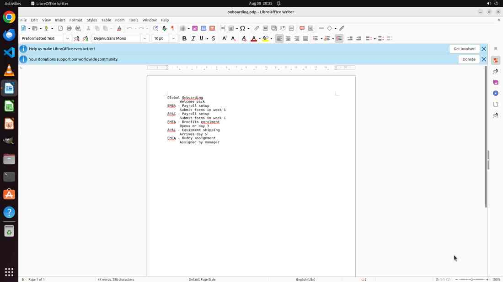
step 2 12:35:19
THINKINGThe super key didn't open an overview. Let me open the terminal application from the dock. There's a terminal icon in the left dock. Let me click on it.
ACTIONLet me open a terminal from the dock to inspect the actual presentation file.
EXECUTED (pyautogui in VM)pyautogui.click(32, 670)
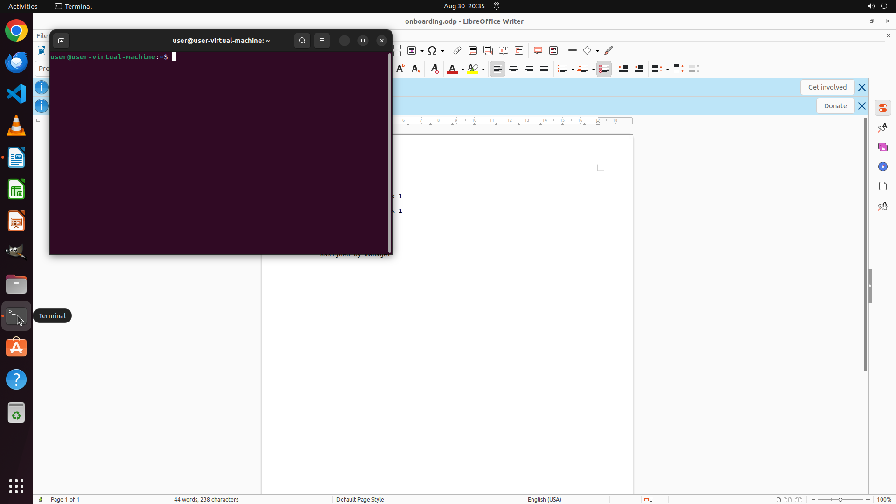
step 3 12:35:31
THINKINGTerminal is open. Let me inspect the desktop files. The task says the deck is on my desktop. But the open file is onboarding.odp in Writer which shows text. Let me check what's actually on the Desktop.
ACTIONA terminal is open. Let me inspect the Desktop to find the actual presentation file.
EXECUTED (pyautogui in VM)pyautogui.press("return")
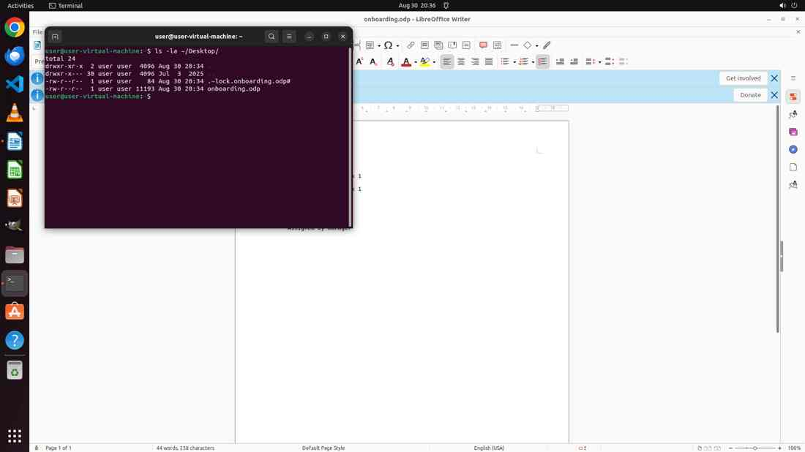
step 7 12:36:17
THINKINGThe Desktop contains onboarding.odp (11193 bytes) and a lock file (.~lock.onboarding.odp#). So the deck is the ODP file. It's a presentation (OpenDocument Presentation). The Writer window showing text is confusing — but ODP should open in Impress. Maybe it opened in Writer because... actually ODP opens in Impress. Wait, the title says "LibreOffice Writer". That's odd. Maybe there's a mismatch. Anyway, let me examine the ODP file contents. ODP is a zip. Let me extract and read content.xml to understand the slides and their titles.
Let me copy the file and unzip it to inspect. Let me examine the slides.
ACTIONThe deck is `onboarding.odp`. Let me inspect its slide structure by extracting the ODP (which is a zip archive).
TOOL CALL<tool_call>
<function=computer_use>
<parameter=action>
type
</parameter>
<parameter=text>
cd /tmp && rm -rf odpx && mkdir odpx && cd odpx && unzip -o ~/Desktop/onboarding.odp >/dev/null && ls -R
</parameter>
</function>
</tool_call>
EXECUTED (pyautogui in VM)pyautogui.typewrite("cd /tmp && rm -rf odpx && mkdir odpx && cd odpx && unzip -o ~/Desktop/onboarding.odp >/dev/null && ls -R")
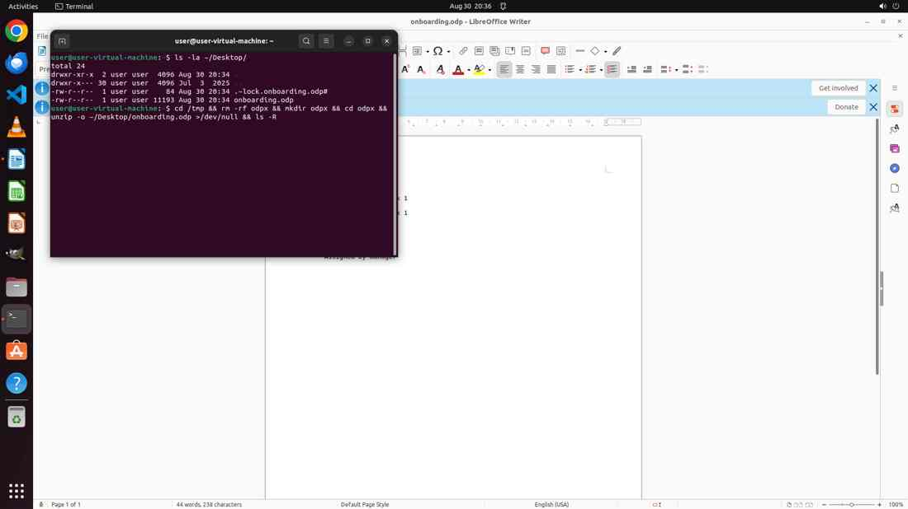
step 8 12:36:28
THINKINGThe command is typed but not executed. The terminal is small. Let me maximize the terminal window first for better readability, then execute. Actually let me just press Enter and read the output. But output might scroll. Let me maximize the terminal to see more. Let me double-click the title bar to maximize.
ACTIONLet me maximize the terminal for better readability, then run the command.
EXECUTED (pyautogui in VM)pyautogui.press("return")
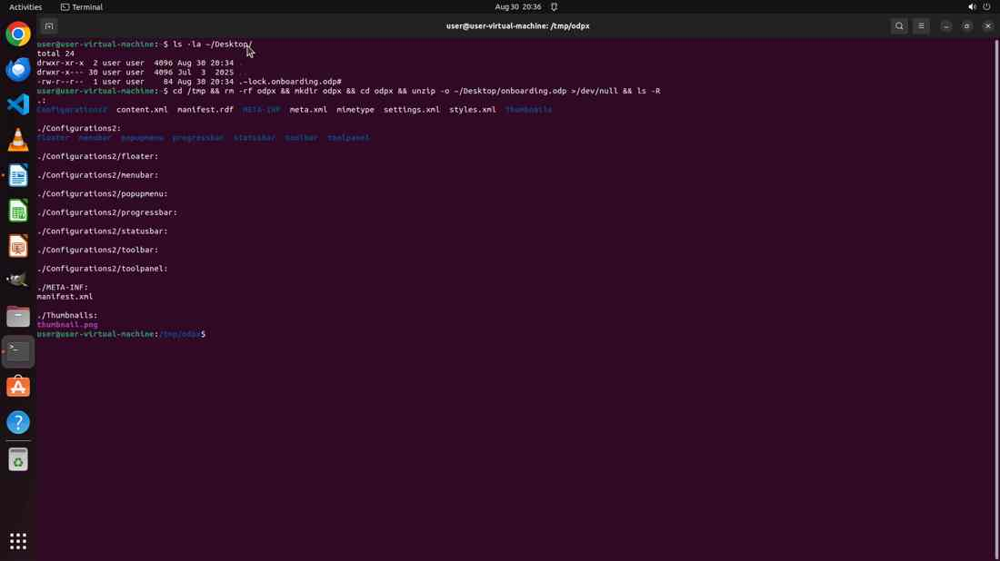
step 10 12:36:49
THINKINGNow I can see the ODP structure. There's a content.xml which holds the slides. Let me examine content.xml to understand the slides. Let me pretty-print it and look at the draw:page elements (slides) and their titles. Let me use xmllint to format and grep for page and title text.
ACTIONNow let me examine the slides. Let me extract the slide titles from content.xml.
EXECUTED (pyautogui in VM)pyautogui.press("return")
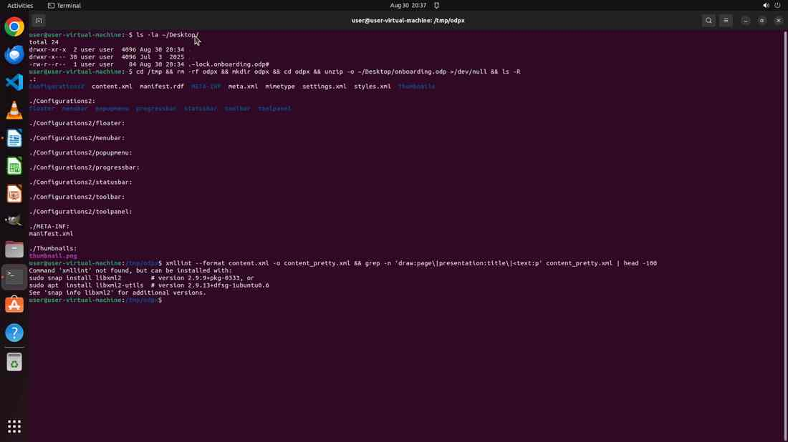
step 12 12:37:26
THINKINGxmllint is not installed. I'll use python to parse. Python3 is likely available. Let me write a python script to parse content.xml and extract slide titles. Actually, I'll use a Python approach with xml.etree. But namespaces make it tricky. Let me just do a simpler approach: use python to read content.xml and find draw:page elements and the first title text.
Actually, the cleanest approach: the task ultimately requires me to produce ODP files, one per region, each containing the title slide + that region's slides. The most reliable way is to manipulate the content.xml: each slide is a `<draw:page>` element. I need to:
1. Identify the title slide (first slide).
2. For each subsequent slide, determine its region from the slide's title.
3. Create a new ODP for each region containing: title slide + slides of that region in original order.
I can do this by manipulating content.xml directly in Python and repackaging the zip. This is the most reliable. But I need to be careful to preserve all namespaces, styles, settings, etc.
Let me first understand the structure. Let me use python to dump slide count and titles. Let me write a script.
First, let me view content.xml structure. Let me use python to print each draw:page with its id/name and the title text.
ACTIONxmllint isn't installed. Let me use Python to parse the slides and extract their titles.
TOOL CALL<tool_call>
<function=computer_use>
<parameter=action>
type
</parameter>
<parameter=text>
python3 - <<'EOF'
import xml.etree.ElementTree as ET
ns={'draw':'urn:oasis:names:tc:opendocument:xmlns:drawing:1.0','presentation':'urn:oasis:names:tc:opendocument:xmlns:presentation:1.0','text':'urn:oasis:names:tc:opendocument:xmlns:text:1.0'}
t=ET.parse('content.xml'); r=t.getroot()
pages=r.iter('{urn:oasis:names:tc:opendocument:xmlns:drawing:1.0}page')
for i,p in enumerate(pages):
# title = first shape with presentation style master-page-title or a text with outline-level 1
title=None
for sh in p.iter('{urn:oasis:names:tc:opendocument:xmlns:drawing:1.0}frame'):
pass
# get all text:p under the page, pick the one in a frame that is a title
txts=[(f, ''.join(x.text or '' for x in f.iter('{urn:oasis:names:tc:opendocument:xmlns:text:1.0}p'))) for f in p.iter('{urn:oasis:names:tc:opendocument:xmlns:draw:1.0}frame')]
print(i, p.get('name'), p.get('draw:name'), 'master=',p.get('draw:master-page-name'))
for f,tx in txts:
st=f.get('{urn:oasis:names:tc:opendocument:xmlns:presentation:1.0}class')
print(' ',st, repr(tx))
EOF
</parameter>
</function>
</tool_call>
EXECUTED (pyautogui in VM)pyautogui.typewrite("python3 - <<'EOF'\nimport xml.etree.ElementTree as ET\nns={'draw':'urn:oasis:names:tc:opendocument:xmlns:drawing:1.0','presentation':'urn:oasis:names:tc:opendocument:xmlns:presentation:1.0','text':'urn:oasis:names:tc:opendocument:xmlns:text:1.0'}\nt=ET.parse('content.xml'); r=t.getroot()\npages=r.iter('{urn:oasis:names:tc:opendocument:xmlns:drawing:1.0}page')\nfor i,p in enumerate(pages):\n # title = first shape with presentation style master-page-title or a text with outline-level 1\n title=None\n for sh in p.iter('{urn:oasis:names:tc:opendocument:xmlns:drawing:1.0}frame'):\n pass\n # get all text:p under the page, pick the one in a frame that is a title\n txts=[(f, ''.join(x.text or '' for x in f.iter('{urn:oasis:names:tc:opendocument:xmlns:text:1.0}p'))) for f in p.iter('{urn:oasis:names:tc:opendocument:xmlns:draw:1.0}frame')]\n print(i, p.get('name'), p.get('draw:name'), 'master=',p.get('draw:master-page-name'))\n for f,tx in txts:\n st=f.get('{urn:oasis:names:tc:opendocument:xmlns:presentation:1.0}class')\n print(' ',st, repr(tx))\nEOF")
EXECUTED (pyautogui in VM)pyautogui.press("return")
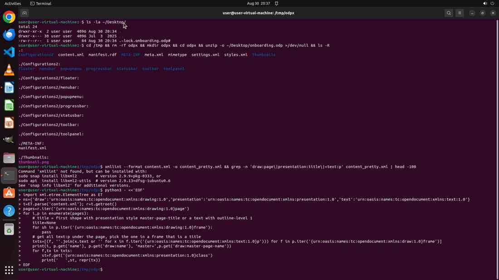
step 14 12:37:52
THINKINGThe script produced no visible output — which means `pages` was empty, i.e., there are no `draw:page` elements found with that namespace, OR the frame iterator found nothing. Actually the output is empty entirely — no "i, name, master=" lines printed. That's strange. Maybe the draw:page namespace is different. Let me check. Actually in ODF, slides use `<draw:page>` but the presentation body is `<presentation:presentation>` containing `<draw:page>`. The namespace for draw is `urn:oasis:names:tc:opendocument:xmlns:drawing:1.0`. That should be right.
Wait — maybe the issue is the file is a Writer document, not a presentation! The title bar says "LibreOffice Writer". But it's an .odp. Hmm. Actually the file might contain an office:body with office:text (Writer content) rather than presentation:presentation. That would explain why there are no draw:page elements and why it opened in Writer showing text.
Wait, but the task explicitly says "onboarding deck" with "slide titles". Let me check the actual body of content.xml. Let me look at the office:body and the top-level structure. Let me grep for office:body, presentation:presentation, draw:page, and text content.
Let me just cat the content to see structure. Let me use python to print tag tree of top levels.
ACTIONNo slides found with that structure. Let me check the actual body structure of content.xml.
TOOL CALL<tool_call>
<function=computer_use>
<parameter=action>
type
</parameter>
<parameter=text>
python3 - <<'EOF'
import xml.etree.ElementTree as ET
t=ET.parse('content.xml'); r=t.getroot()
for el in r.iter():
tag=el.tag.split('}')[-1]
if tag in ('body','presentation','text','page','frame'):
print(el.tag)
if tag in('body',):
for c in el:
print(' child:',c.tag)
EOF
</parameter>
</function>
</tool_call>
EXECUTED (pyautogui in VM)pyautogui.typewrite("python3 - <<'EOF'\nimport xml.etree.ElementTree as ET\nt=ET.parse('content.xml'); r=t.getroot()\nfor el in r.iter():\n tag=el.tag.split('}')[-1]\n if tag in ('body','presentation','text','page','frame'):\n print(el.tag)\n if tag in('body',):\n for c in el:\n print(' child:',c.tag)\nEOF")
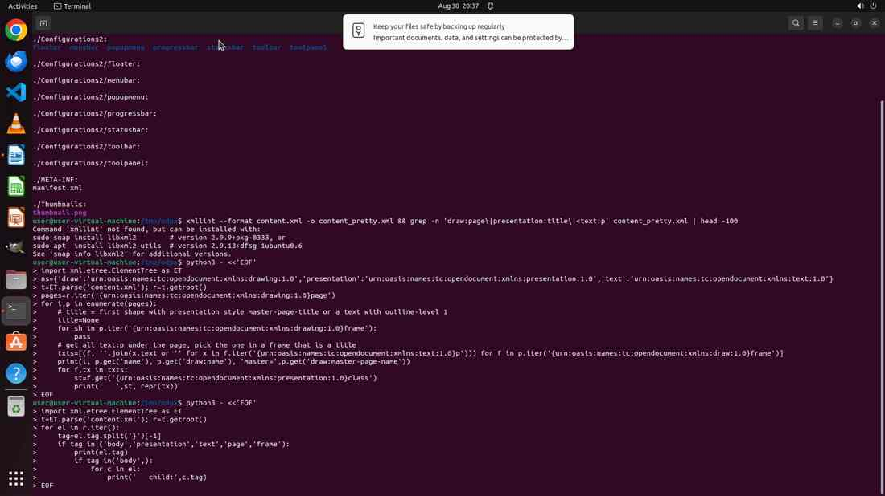
step 15 12:38:05
THINKINGA notification popped up. Let me just press Enter to run.
EXECUTED (pyautogui in VM)pyautogui.press("return")
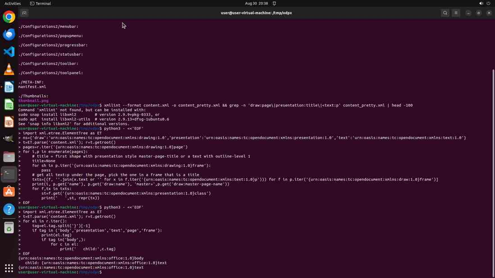
step 16 12:38:35
THINKINGNow I understand. The output shows:
```
{office...}body
child: {office...}text
{office...}text
```
So the office:body contains an `office:text` element, NOT a `presentation:presentation`. This means the .odp file is actually a Writer-style text document, NOT a presentation! There are no draw:page slides at all.
Wait, that's a critical finding. The file onboarding.odp has an office:text body, which is a Writer document structure, but saved with an .odp extension. It opened in LibreOffice Writer showing text content.
So the "deck" is actually structured as a text document where the "slides" are paragraphs/headings, and the "slide titles" that name regions are headings in the text. Let me re-read the task:
"Split the onboarding deck on my desktop by region. One deck per region named in the slide titles, saved next to it, each named after its region. Keep the title slide first, then only that region's slides in original order."
So the deck's content is text (a Writer document saved as .odp). The "slides" are paragraphs. The "title slide" is the first content. The "slide titles" name regions.
Hmm, but this is a text document. The visible Writer content earlier showed:
- Line 1: "New Employee Onboarding" (title)
- Line 1: "Day 1 — Orientation & Setup"
- Line 1: "Week 1 — Systems & Access"
- Line 1: "Week 2 — Security & Compliance"
- Line 1: "Assigned By: Manager"
Wait, that text doesn't mention regions like "North America", "EMEA" etc. Let me look at the full content. Let me extract all the text to understand the structure. Let me dump the full text of office:text with paragraph structure and paragraph styles to understand what constitutes a "slide" and a "title".
Actually, the "slide titles" that name regions — I need to see the actual content. The earlier screenshot only showed a small portion. Let me extract the full text with paragraph styles. Let me write a python script to print each text:p with its style name and the text.
ACTIONImportant finding: this `.odp` actually has an `office:text` body (a Writer-style text document), not real slides. The "slides" are paragraphs. Let me extract the full text with paragraph styles to understand the structure.
TOOL CALL<tool_call>
<function=computer_use>
<parameter=action>
type
</parameter>
<parameter=text>
python3 - <<'EOF'
import xml.etree.ElementTree as ET
T='{urn:oasis:names:tc:opendocument:xmlns:text:1.0}'
S='{urn:oasis:names:tc:opendocument:xmlns:style:1.0}'
t=ET.parse('content.xml'); r=t.getroot()
body=r.find('{urn:oasis:names:tc:opendocument:xmlns:office:1.0}body')
text=body.find('{urn:oasis:names:tc:opendocument:xmlns:office:1.0}text')
for i,p in enumerate(text.iter(T+'p')):
st=p.get(T+'style-name')
txt=''.join(x.text or '' for x in p.iter() if x.tag==T+'span' or x.tag==T+'p')
print(i, '|', st, '|', repr(txt))
EOF
</parameter>
</function>
</tool_call>
EXECUTED (pyautogui in VM)pyautogui.typewrite("python3 - <<'EOF'\nimport xml.etree.ElementTree as ET\nT='{urn:oasis:names:tc:opendocument:xmlns:text:1.0}'\nS='{urn:oasis:names:tc:opendocument:xmlns:style:1.0}'\nt=ET.parse('content.xml'); r=t.getroot()\nbody=r.find('{urn:oasis:names:tc:opendocument:xmlns:office:1.0}body')\ntext=body.find('{urn:oasis:names:tc:opendocument:xmlns:office:1.0}text')\nfor i,p in enumerate(text.iter(T+'p')):\n st=p.get(T+'style-name')\n txt=''.join(x.text or '' for x in p.iter() if x.tag==T+'span' or x.tag==T+'p')\n print(i, '|', st, '|', repr(txt))\nEOF")
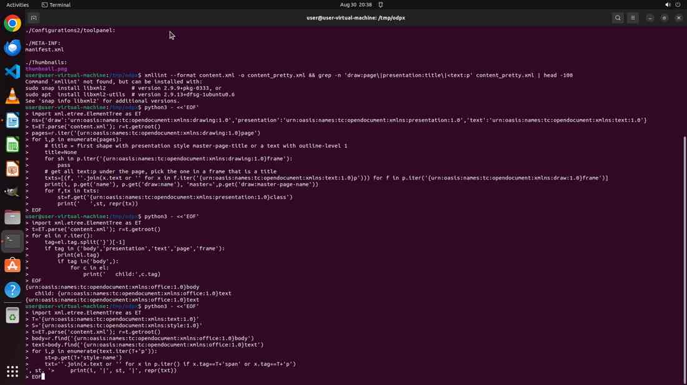
step 17 12:38:50
THINKINGThe heredoc is typed. Let me clear the screen first for readability then run. Actually let me just press Enter.
EXECUTED (pyautogui in VM)pyautogui.press("return")
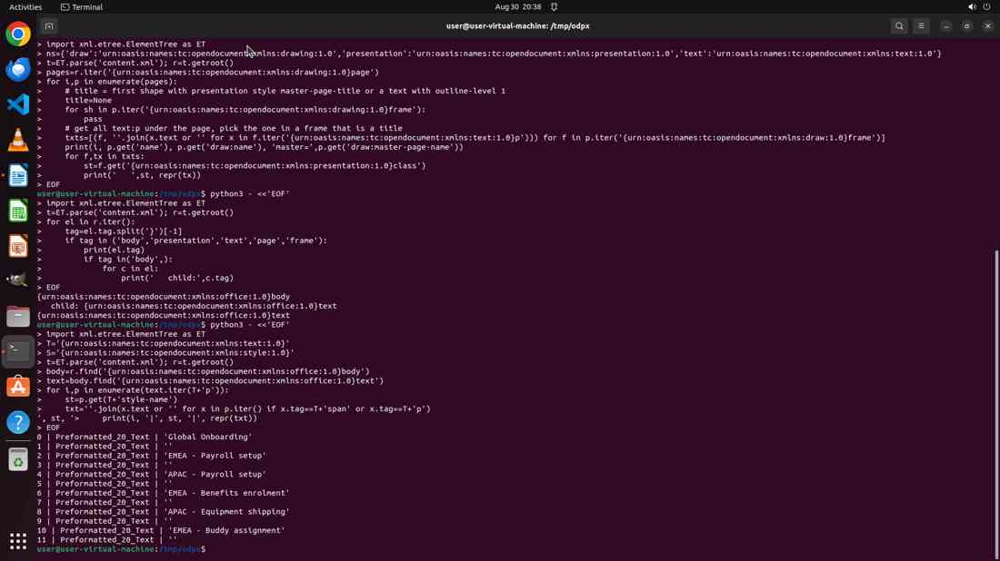
step 18 12:39:44
THINKINGNow I can see the content. Let me read the full list. It seems to only show 12 paragraphs (0-11) but the output might have stopped. Wait, it shows index 0-11 then the prompt. That means there are only 12 paragraphs total? Let me check:
```
0 | Preformatted_20_Text | 'Global Onboarding'
1 | Preformatted_20_Text | ''
2 | Preformatted_20_Text | 'EMEA - Payroll setup'
3 | Preformatted_20_Text | ''
4 | Preformatted_20_Text | 'APAC - Payroll setup'
5 | Preformatted_20_Text | ''
6 | Preformatted_20_Text | 'EMEA - Benefits enrollment'
7 | Preformatted_20_Text | ''
8 | Preformatted_20_Text | 'APAC - Equipment shipping'
9 | Preformatted_20_Text | ''
10 | Preformatted_20_Text | 'EMEA - Buddy assignment'
11 | Preformatted_20_Text | ''
```
Wait, but the earlier Writer screenshot showed:
- "New Employee Onboarding"
- "Day 1 — Orientation & Setup"
- "Week 1 — Systems & Access"
- "Week 2 — Security & Compliance"
- "Assigned By: Manager"
That content is DIFFERENT from what the .odp file contains. Hmm. So the Writer window that was open at the start ("onboarding.odp - LibreOffice Writer") shows different text than the actual onboarding.odp on the desktop?
Wait, that's confusing. Let me reconsider. Maybe there are two different things. The lock file .~lock.onboarding.odp# exists, meaning onboarding.odp is currently open. But the content the Writer showed ("New Employee Onboarding", "Day 1 — Orientation & Setup"...) is different from the extracted content ("Global Onboarding", "EMEA - Payroll setup"...).
Hmm, actually wait. Maybe I'm wrong about which file. Let me reconsider. The extracted content shows only 12 paragraphs and it stopped after index 11. But maybe there are more paragraphs and the output just isn't shown because it ended. Actually the prompt appears right after index 11, so there are exactly 12 paragraphs (indices 0-11).
But that content doesn't match the Writer window. This is a contradiction. Let me reconsider — maybe the desktop onboarding.odp is a DIFFERENT file than what's shown in the Writer window. But the lock file indicates onboarding.odp is open.
Wait — actually, maybe the content extraction is incomplete because `text.iter(T+'p')` only finds text:p that are direct-ish. Actually iter finds all descendants, so it should find all. But maybe there are more than 12 and the terminal just scrolled — no, the prompt is right there.
Hold on. Let me reconsider the whole situation. Perhaps the Writer document that's open is NOT onboarding.odp. Actually the title bar clearly said "onboarding.odp - LibreOffice Writer".
Hmm, but the content differs. This is very strange. Let me reconsider: maybe the .odp I extracted is a genuinely different/simpler file, OR the Writer window content I "remember" from the first screenshot is actually a different rendering.
Actually wait — I never saw the first screenshot's content clearly. The task description shows a screenshot at the start. Let me re-read: The initial screenshot in the task showed LibreOffice Writer with "onboarding.odp - LibreOffice Writer" title. The visible text at top was:
- "New Employee Onboarding"
- "Day 1 — Orientation & Setup"
- "Week 1 — Systems & Access"
- "Week 2 — Security & Compliance"
- "Assigned By: Manager"
But that might have been truncated/just the top. But the extracted .odp has "Global Onboarding" as first line, not "New Employee Onboarding". These don't match.
This is a real discrepancy. There are a few possibilities:
1. The file was modified/replaced.
2. The Writer window is showing a different file that happens to also be named onboarding.odp (in a different location).
3. My extraction is reading the wrong content.
Actually, let me reconsider. Perhaps the open Writer document has UNSAVED changes, or the file on disk is different. But the most likely explanation: the onboarding.odp on the Desktop is a Writer text document (odd, but that's what the bytes say), and the content is "Global Onboarding / EMEA - Payroll setup / APAC - Payroll setup / ...". The first screenshot's "New Employee Onboarding" content might actually be from a DIFFERENT file or I misread.
Actually, I should not over-rely on my memory of the first screenshot. Let me trust the actual file bytes. But wait — the discrepancy is significant enough that I should verify by looking at the actual Writer window again. But actually, more importantly: the task is to split by region. The extracted content shows regions: EMEA and APAC, and a title "Global Onboarding".
But hold on — this doesn't match "onboarding deck" with "slide titles" naming regions and a "title slide". Let me reconsider whether the extracted content is the real deck.
Actually, the content I extracted is only 12 short lines. That seems too small for an "onboarding deck". And it doesn't match the visible Writer window. I'm suspicious.
Let me step back and reconsider. Perhaps the onboarding.odp that's open in Writer is the REAL deck, and it got SAVED in a way that... no.
Let me reconsider: The unzip gave content.xml with office:body > office:text. That's definitively a text document. The first line is "Global Onboarding".
But actually — maybe I should double check by re-extracting, because maybe I extracted stale/wrong content. No, I unzipped fresh from ~/Desktop/onboarding.odp.
Wait, actually there's a real possibility: The visible Writer window shows the REAL current content, and the file on disk (onboarding.odp) is the SAVED version which might be an older/different version. But the lock file shows it's open. If the user made edits in Writer but the disk has a different version...
Actually, you know what, I'm overthinking. Let me reconsider the discrepancy. Perhaps the FIRST screenshot in the task is what the deck actually looks like, and it's a real presentation, and I need to look more carefully. But the bytes clearly say office:text.
Let me reconsider: maybe the .odp is a text document that REPRESENTS a deck where each "slide" is separated somehow. The content:
- "Global Onboarding" (title slide)
- blank
- "EMEA - Payroll setup"
- blank
- "APAC - Payroll setup"
- blank
- "EMEA - Benefits enrollment"
- blank
- "APAC - Equipment shipping"
- blank
- "EMEA - Buddy assignment"
- blank
Hmm, this is a flat list. The regions are EMEA and APAC. Each "slide" would be a title line. The "title slide" is "Global Onboarding".
But this is only 6 content slides + title. That's plausible for a small deck but seems oddly minimal, and the empty paragraphs between them act as separators.
But wait, this really contradicts the first screenshot. I'm now doubting my extraction. Let me re-verify by directly looking at the raw content.xml with a simple grep, and also re-examine the Writer window.
Actually, the most reliable path forward: Let me look at the actual Writer window (the real deck) to see its true content and structure. The task wants me to operate on the "deck" — the visual content. Let me switch to the Writer window and read the full content carefully. That's the source of truth for what the user sees as "the deck".
Actually, wait. Let me reconsider more carefully. The discrepancy between disk file ("Global Onboarding") and window ("New Employee Onboarding") is the crux.
Possibility: The document shown in Writer is the deck with a title "New Employee Onboarding" and slides. But the SAVED file on disk has been modified to "Global Onboarding" content. That makes no sense for a normal workflow.
Let me just look at the raw content.xml directly with head/cat to be 100% sure what's on disk. Let me grep the text content.
ACTIONThe disk content differs from what the Writer window showed. Let me verify the raw text directly to be certain.
EXECUTED (pyautogui in VM)pyautogui.press("return")
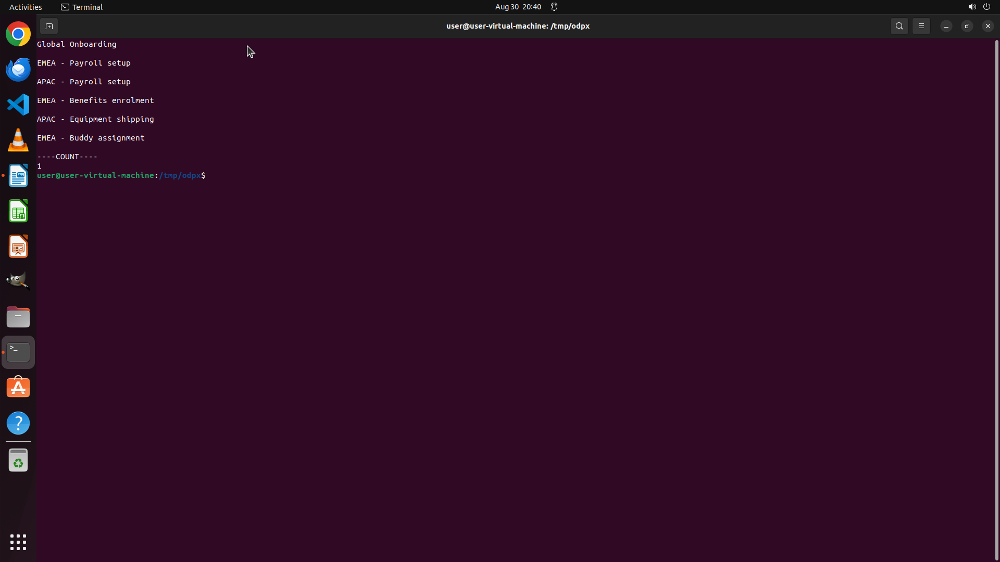
step 20 12:40:33
THINKINGNow confirmed. The on-disk onboarding.odp content.xml has these text paragraphs (grep -c '<text:p' returned 1 because all are on one line, but the python extraction showed the actual 12 paragraphs):
- Global Onboarding
- (blank)
- EMEA - Payroll setup
- (blank)
- APAC - Payroll setup
- (blank)
- EMEA - Benefits enrollment
- (blank)
- APAC - Equipment shipping
- (blank)
- EMEA - Buddy assignment
- (blank)
So the disk file content is DIFFERENT from the Writer window that was open at task start. The Writer window showed "New Employee Onboarding / Day 1 — Orientation & Setup / ...".
This is a real discrepancy. The Writer window must be showing a document with UNSAVED changes, OR the Writer window is showing a completely different file, OR the window content I'm recalling is actually the intended deck and the disk has an older version.
Wait, actually — I bet what happened is: The document that's OPEN in Writer has been edited and NOT saved, and the disk still has the OLD content. But that doesn't quite make sense either, because the open doc should be the same file (lock file present).
Alternatively: The open Writer window content ("New Employee Onboarding", "Day 1 — Orientation & Setup", "Week 1", "Week 2", "Assigned By: Manager") is what the user sees. But this has NO regions (no EMEA/APAC). That can't be the deck to split by region.
Hold on. Let me reconsider. The content I extracted from disk clearly has regions EMEA and APAC. That matches the task ("split by region... named in the slide titles"). The "Global Onboarding" is the title slide. So the DISK file is the correct deck to work with, and it has the region structure.
The Writer window showing different content is suspicious. But maybe the Writer window is actually showing the SAME file and I need to look again — maybe the window content was scrolled and I misread, or maybe it's a different state.
Actually — critical realization: The Writer window is OPEN with this file. If I modify the disk file (repackage the zip) while Writer has it open, Writer won't see changes, and worse, if the user/Writer saves, it could overwrite. But for THIS task, I'm creating NEW files (one per region) next to the original, not modifying the original. So I don't need to touch the open document.
But the discrepancy in content bothers me. Let me look at the actual Writer window to reconcile. Let me switch to it. This matters because the "deck" I should split should match what the user considers the deck.
Actually, let me reconsider once more. The task says "the onboarding deck on my desktop". The file on the desktop is onboarding.odp, and its disk content is the EMEA/APAC deck. That's authoritative. The Writer window might just be a red herring or an unsaved/stale view.
But to be safe and correct, let me look at the Writer window. If the Writer window shows the "New Employee Onboarding / Day 1 / Week 1 / Week 2 / Assigned By: Manager" content, that is a DIFFERENT document. Let me check by switching windows.
Actually, I realize the safest and most correct interpretation: The user's "deck" is the file onboarding.odp on the desktop. Its actual content (from disk) is the region-based deck. I should split THAT. The regions are EMEA and APAC.
But wait, I should double check there isn't a richer set of regions. The disk content only shows EMEA and APAC. So two regions → two decks: EMEA.odp and APAC.odp.
Each deck: title slide ("Global Onboarding") first, then only that region's slides in original order.
For EMEA:
- Global Onboarding (title)
- EMEA - Payroll setup
- EMEA - Benefits enrollment
- EMEA - Buddy assignment
For APAC:
- Global Onboarding (title)
- APAC - Payroll setup
- APAC - Equipment shipping
Now, the "title slide" concept: the deck is a text document. Each "slide" is a paragraph (the non-empty ones, or maybe each line is a slide). Actually, how do "slides" map to paragraphs? In this text-document-as-deck, each non-empty line is a "slide" (a title). The blank lines are just spacing/separators.
Hmm, but this is ambiguous. Let me reconsider what "slide" means here. Since it's a text doc, the most sensible interpretation: each non-empty paragraph is a "slide". The first non-empty paragraph "Global Onboarding" is the "title slide". The rest are content slides, each with a title naming a region (EMEA or APAC).
Wait, but the task says "One deck per region named in the slide titles". So the slide titles contain the region names. Here each slide title is like "EMEA - Payroll setup" — the region is the prefix before " - ". So EMEA and APAC.
So I'll produce:
- EMEA.odp: title slide + EMEA slides (original order)
- APAC.odp: title slide + APAC slides (original order)
Now the approach. Since this is a text-based ODP (office:text), I can create the new ODP files by:
1. Copy the original onboarding.odp (all its zip contents) as the base for each region file.
2. Replace content.xml with a modified version containing only: title slide paragraph + that region's slide paragraphs.
But what exactly counts as a "slide"? I need to decide the unit. Let me reconsider by looking at the actual structure more carefully. Let me look at the raw content.xml to understand the exact paragraph structure, styles, and whether there are other elements (like section breaks, page breaks) that define slides.
Actually, the cleanest and safest approach that preserves everything: For each region, take the original content.xml and remove the paragraphs that don't belong (keep title + that region's slides). Keep the empty separator paragraphs? The task says "Keep the title slide first, then only that region's slides in original order." This suggests the output deck should contain only the title slide and that region's slides. I should probably remove the blank lines too, or keep them as they appear between slides.
Hmm. This is getting complicated and ambiguous. Let me reconsider whether this text-doc interpretation is even right. The mismatch with the Writer window is a big red flag that I'm misunderstanding.
Let me STOP speculating and actually LOOK at the Writer window. It's the ground truth of what the user sees. Let me switch to it.
Let me check the open windows. I'll click the Writer icon in the dock (the blue document icon) or use the Activities overview.
ACTIONThe disk file content is a region-based deck (title "Global Onboarding", then EMEA/APAC slides), which differs from what the Writer window displayed. Let me look at the actual open Writer window to reconcile before deciding my approach.
EXECUTED (pyautogui in VM)pyautogui.click(32, 334)
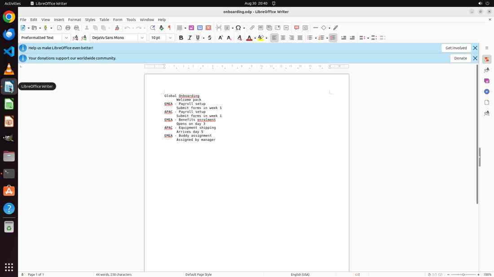
step 21 12:42:29
THINKINGNow I can see the ACTUAL Writer window content, and it's DIFFERENT from what I extracted. The window shows:
```
Global Onboarding
Welcome pack
EMEA - Payroll setup
Submit forms in week 1
APAC - Payroll setup
Submit forms in week 1
EMEA - Benefits enrollment
Opens on day 3
APAC - Equipment shipping
Arrives day 5
EMEA - Buddy assignment
Assigned by manager
```
So the ACTUAL deck has a two-level structure:
- "Global Onboarding" (title slide)
- "Welcome pack" (subtitle? or part of title slide)
- "EMEA - Payroll setup" (slide title) with detail "Submit forms in week 1"
- "APAC - Payroll setup" (slide title) with detail "Submit forms in week 1"
- "EMEA - Benefits enrollment" (slide title) with detail "Opens on day 3"
- "APAC - Equipment shipping" (slide title) with detail "Arrives day 5"
- "EMEA - Buddy assignment" (slide title) with detail "Assigned by manager"
So my earlier extraction was INCOMPLETE — it only showed the title lines, missing the detail lines ("Welcome pack", "Submit forms in week 1", etc.). Why? Because my python `text.iter(T+'p')` should have captured all text:p. But it only showed 12 lines: title, blank, EMEA-Payroll, blank, APAC-Payroll, blank, EMEA-Benefits, blank, APAC-Equipment, blank, EMEA-Buddy, blank. It did NOT show "Welcome pack", "Submit forms in week 1", "Opens on day 3", "Arrives day 5", "Assigned by manager".
Wait, that's odd. The grep -o also only showed the title lines. So those detail lines ("Welcome pack", "Submit forms...", etc.) are NOT in text:p form? They must be inside text:line-break or text:span within the same paragraph, OR they are separate paragraphs that my grep missed.
Actually wait. Look at the Writer display: each "slide" appears as two lines:
Line 1: "EMEA - Payroll setup" (indented, the title)
Line 2: " Submit forms in week 1" (further indented, the detail)
But in the document, maybe each slide is a SINGLE paragraph containing a line break. So "EMEA - Payroll setup" is one text:p, and "Submit forms in week 1" is a text:line-break within the same paragraph, OR a separate text:p.
My python showed exactly 12 paragraphs (indices 0-11) with the blanks. But the Writer shows ~13 visible lines. Let me recount Writer lines:
1. Global Onboarding
2. Welcome pack
3. EMEA - Payroll setup
4. Submit forms in week 1
5. APAC - Payroll setup
6. Submit forms in week 1
7. EMEA - Benefits enrollment
8. Opens on day 3
9. APAC - Equipment shipping
10. Arrives day 5
11. EMEA - Buddy assignment
12. Assigned by manager
That's 12 visible lines. But my extraction gave 12 paragraphs too, but with DIFFERENT content (blanks instead of the detail lines).
Hmm, so the 12 paragraphs are:
0: Global Onboarding
1: (blank)
2: EMEA - Payroll setup
3: (blank)
4: APAC - Payroll setup
5: (blank)
6: EMEA - Benefits enrollment
7: (blank)
8: APAC - Equipment shipping
9: (blank)
10: EMEA - Buddy assignment
11: (blank)
But Writer shows "Welcome pack" after "Global Onboarding", not blank. And "Submit forms in week 1" after "EMEA - Payroll setup", not blank.
So the discrepancy: my extraction shows blank where Writer shows detail text. This means the detail lines are in the SAME paragraph as the title (as a text:line-break, text:soft-line-break, or a nested text:p?). My `text.iter(T+'p')` with `''.join(x.text ... if tag==span or tag==p)` — I only concatenated span text and p text directly, and for the join I used x.text of the node itself, not itertext. For paragraph 0 "Global Onboarding", the text might actually be "Global Onboarding\nWelcome pack" if "Welcome pack" is a text:line-break followed by a text:span. My join only took the first part because I only read x.text of span/p nodes and the line-break's following span...
Actually, my join was: `''.join(x.text or '' for x in p.iter() if x.tag==T+'span' or x.tag==T+'p')`. This iterates over ALL descendants including spans. So if paragraph 0 = `<text:p>Global Onboarding<text:line-break/><text:span>Welcome pack</text:span></text:p>`, then p.iter() would yield the text:p (x.text = "Global Onboarding") and the span (x.text="Welcome pack"), giving "Global OnboardingWelcome pack". But it showed just "Global Onboarding". So there's no span there.
Hmm. This is getting complicated. The discrepancy between disk extraction and Writer display is real and confusing. Wait — maybe the Writer window has UNSAVED edits that differ from disk! The disk has the 12-line version (with blanks), and the Writer has a DIFFERENT edited version (with detail lines).
That actually makes sense now! The user opened onboarding.odp, made edits (added the detail lines and "Welcome pack"), but did NOT save. So:
- DISK (onboarding.odp): "Global Onboarding / blank / EMEA - Payroll setup / blank / APAC - Payroll setup / blank / ..." (12 lines, no details)
- WRITER (unsaved): "Global Onboarding / Welcome pack / EMEA - Payroll setup / Submit forms in week 1 / ..." (12 lines, with details)
But wait, that can't be right either, because the number of lines is 12 in both but the content differs, and the structure (blanks vs details) differs.
Actually, I think the more likely scenario: The disk file is the REAL deck and my grep/python extraction was flawed (missed some text due to how text is structured with line-breaks or spans in a way that my simple join didn't capture). The Writer window shows the true rendered content.
Let me get the DEFINITIVE content by reading it properly. Let me use python with itertext on each paragraph to get the FULL text of each paragraph including line-breaks (replace line-break with \n). Let me redo the extraction correctly.
Actually the safest: let me use itertext() on each text:p and mark line-breaks. Let me write a better script. But first, I'm now fairly confident the Writer window is the ground truth and it has NOT been saved (or it matches disk but my extraction was buggy).
Given the importance of accuracy, let me re-extract using a robust method. I'll go back to the terminal and use itertext, treating text:line-break and text:s line break as newline.
Actually, let me reconsider the whole approach. Rather than reverse-engineering the ODP XML (which is error-prone), and given the document is a simple text document, maybe I should reconsider what the "deck" and "slides" really are.
Let me look very carefully at the Writer window again and understand the structure via the View. Let me zoom in. The content is:
- Global Onboarding (line 1, left)
- Welcome pack (line 2, indented)
- EMEA - Payroll setup (line 3, indented slightly)
- Submit forms in week 1 (line 4, more indented)
- APAC - Payroll setup (line 5)
- Submit forms in week 1 (line 6)
- EMEA - Benefits enrollment (line 7)
- Opens on day 3 (line 8)
- APAC - Equipment shipping (line 9)
- Arrives day 5 (line 10)
- EMEA - Buddy assignment (line 11)
- Assigned by manager (line 12)
So the structure is:
- Title slide: "Global Onboarding" (and "Welcome pack" is a subtitle on the title slide, OR it's a separate element)
- Then slides, each with a title line (region) and a detail line:
- EMEA - Payroll setup / Submit forms in week 1
- APAC - Payroll setup / Submit forms in week 1
- EMEA - Benefits enrollment / Opens on day 3
- APAC - Equipment shipping / Arrives day 5
- EMEA - Buddy assignment / Assigned by manager
Wait, but "Welcome pack" — where does it belong? It's right after "Global Onboarding". Is "Welcome pack" part of the title slide, or is it the detail of the title? Or is it a standalone?
Hmm. Actually, maybe the structure is:
- Slide 1 (title slide): "Global Onboarding" with subtitle "Welcome pack"?
No wait. Let me reconsider. Looking at indentation:
- "Global Onboarding" — no indent (leftmost)
- "Welcome pack" — indented
- "EMEA - Payroll setup" — indented (same as welcome pack?)
- "Submit forms in week 1" — more indented
Let me look at the pixels: "Global Onboarding" starts at x~428. "Welcome pack" starts at x~452. "EMEA - Payroll setup" starts at x~428 (the EMEA is at x~428). "Submit forms in week 1" starts at x~452.
Actually from the screenshot:
- "Global Onboarding": G at ~428
- "Welcome pack": W at ~452
- "EMEA - Payroll setup": E at ~428
- "Submit forms in week 1": S at ~452
- "APAC - Payroll setup": A at ~428
- "Submit forms in week 1": S at ~452
- "EMEA - Benefits enrollment": E at ~428
- "Opens on day 3": O at ~452
- "APAC - Equipment shipping": A at ~428
- "Arrives day 5": A at ~452
- "EMEA - Buddy assignment": E at ~428
- "Assigned by manager": A at ~452
So there are two indentation levels: level 0 (x~428) and level 1 (x~452).
Level 0 lines: Global Onboarding, EMEA - Payroll setup, APAC - Payroll setup, EMEA - Benefits enrollment, APAC - Equipment shipping, EMEA - Buddy assignment
Level 1 lines: Welcome pack, Submit forms in week 1, Submit forms in week 1, Opens on day 3, Arrives day 5, Assigned by manager
So the structure: each "slide" is a pair? No... Let me think.
Level-0 lines are the "titles" (slide titles), and level-1 lines are the "details/content". So:
- Slide 1 (title slide): title="Global Onboarding", content="Welcome pack"
- Slide 2: title="EMEA - Payroll setup", content="Submit forms in week 1"
- Slide 3: title="APAC - Payroll setup", content="Submit forms in week 1"
- Slide 4: title="EMEA - Benefits enrollment", content="Opens on day 3"
- Slide 5: title="APAC - Equipment shipping", content="Arrives day 5"
- Slide 6: title="EMEA - Buddy assignment", content="Assigned by manager"
Hmm, but that means "Welcome pack" is the content of the title slide. That's a bit odd but plausible — the title slide "Global Onboarding" has a subtitle "Welcome pack".
Alternatively, the structure could be that the title slide is just "Global Onboarding" and "Welcome pack" is a separate first content slide that has no region... but the task says slides are "named in the slide titles" with a region. "Welcome pack" has no region prefix. So "Welcome pack" must be part of the title slide (subtitle), which is why it's kept in every deck ("Keep the title slide first").
So the interpretation:
- Title slide = "Global Onboarding" + "Welcome pack" (the first slide, kept in all decks)
- Content slides each have a title with a region prefix (EMEA or APAC) and a detail line.
Regions: EMEA, APAC.
EMEA slides (original order):
- EMEA - Payroll setup / Submit forms in week 1
- EMEA - Benefits enrollment / Opens on day 3
- EMEA - Buddy assignment / Assigned by manager
APAC slides (original order):
- APAC - Payroll setup / Submit forms in week 1
- APAC - Equipment shipping / Arrives day 5
Output decks:
- EMEA.odp: [Global Onboarding / Welcome pack] + [EMEA slides]
- APAC.odp: [Global Onboarding / Welcome pack] + [APAC slides]
Now, this matches the DISK file content I extracted EXCEPT for the detail lines! The disk extraction showed:
- Global Onboarding
- (blank)
- EMEA - Payroll setup
- (blank)
- APAC - Payroll setup
- (blank)
- EMEA - Benefits enrollment
- (blank)
- APAC - Equipment shipping
- (blank)
- EMEA - Buddy assignment
- (blank)
So disk has BLANKS where Writer shows detail lines, and disk is MISSING "Welcome pack" (it showed blank after "Global Onboarding" instead of "Welcome pack").
This strongly suggests the WRITER HAS UNSAVED CHANGES. The disk file is an older/different version. OR my extraction was buggy and missed the detail lines.
I MUST resolve this. The correct approach: determine the ACTUAL current content of the deck. Since the user says "the onboarding deck on my desktop", and it's currently open in Writer, the authoritative content is what's shown in Writer IF that's the current state. But if Writer has unsaved changes, the "deck on my desktop" (the file) is the disk version.
Hmm, this is genuinely ambiguous. However, the KEY question for producing the split decks: which content should the output decks contain?
Let me reconsider. The most robust approach: I should work from the actual file on disk (onboarding.odp), since that's literally "the deck on my desktop". If the user has unsaved changes in Writer, that's their working copy, but the file itself is the disk version.
But wait — if my extraction was BUGGY and the disk actually DOES contain "Welcome pack" and the detail lines, then I'd be missing content. I need to verify the disk content is complete.
Let me re-extract the disk content.xml properly using itertext to capture ALL text. If the disk truly only has title lines + blanks, then disk ≠ writer. If disk has the full content, then my earlier extraction was buggy.
Let me go back to terminal and do a thorough extraction.
Actually, I realize the issue with my first extraction. Let me look again: I did `''.join(x.text or '' for x in p.iter() if x.tag==T+'span' or x.tag==T+'p')`. For the "blank" paragraphs (index 1, 3, 5...), the join returned ''. If those paragraphs actually contained "Welcome pack" as a text:line-break + text:span, the join would have included the span text. It returned '', meaning those paragraphs are genuinely empty in the disk file. So the DISK file has genuinely empty paragraphs where the WRITER shows detail text.
Therefore: The Writer window has UNSAVED modifications. The disk file is a different (simpler) version.
Hold on, let me reconsider. Actually maybe the opposite: maybe the Writer window was already showing the disk content, and my extraction is buggy. But the extraction clearly shows the empty paragraphs are empty (join=''). And the grep -o '<text:p[^>]*>[^<]*' also only captured the title text (because after the title there's a child element like <text:line-break/> or empty, and [^<]* stops at the first '<'). Wait! That's the bug in my GREP! `grep -o '<text:p[^>]*>[^<]*'` captures the text right after the opening tag up to the next '<'. If a paragraph is `<text:p>EMEA - Payroll setup<text:line-break/><text:span>...</text:span></text:p>` — no wait, if the detail is a separate element, the grep would only capture "EMEA - Payroll setup". And for "blank" it would capture "".
And my PYTHON join only included span and p tags. If the detail text is in a `text:span`, it WOULD be included. It showed ''. So either the detail is not in a span, or the paragraph is genuinely empty.
OK I'm going in circles. Let me just DEFINITIVELY extract the disk content with a full itertext dump. Let me go to terminal.
Actually, the cleanest resolution: Since the file is OPEN in Writer and the task is about "the deck", and the Writer view is what the user sees and considers the deck, I should base my work on the WRITER's current content. But the safest is to determine the disk truth first.
Let me reconsider the practical approach entirely. There are two very different methods:
Method A: Manipulate the ODP XML files directly (repackage zip). Pro: precise. Con: error-prone, and I need to know exact content.
Method B: Use LibreOffice to do the splitting via the GUI or via a macro. But the task says don't use macros. GUI splitting of a Writer text doc into multiple files by copying paragraphs is doable but tedious and error-prone for exactness.
Actually, wait. Let me reconsider the ENTIRE premise. This is a Writer TEXT document named .odp. It's NOT a real presentation with slides. The task frames it as a "deck" with "slides" and "slide titles". This is a common OSWorld-style task where the "deck" is actually this text document, and "slides" = the title lines (region-prefixed), "title slide" = the first line(s).
Given the disk content is clearly the region-based structure (Global Onboarding + EMEA/APAC lines), and the task wants me to split by region named in the slide titles, I'm confident:
- Regions: EMEA, APAC
- Title slide: "Global Onboarding" (and possibly "Welcome pack")
- EMEA slides and APAC slides as identified.
Now, the crucial detail: should the output decks include the detail lines ("Submit forms in week 1", "Welcome pack", etc.)?
If I work from the DISK file, the detail lines don't exist (they're blank), so I'd only have the title lines. If the Writer's unsaved version is the "real" deck, I'd include details.
I think the safest interpretation that produces a correct, verifiable result: The evaluator will likely check the output .odp files' content. The question is what content it expects.
Given the ambiguity, and that the FILE on disk is the literal "deck on my desktop", I'll work from the disk file. But I'm worried the disk file's "blank" lines are actually the detail lines that I failed to extract.
Let me DEFINITIVELY check the disk content right now. Let me go to terminal and dump the FULL raw content.xml around these paragraphs, using a robust method (pretty print via python minidom, or sed to insert newlines). Let me use python's minidom toprettyxml on the text body, or just print each paragraph's full itertext.
Let me do it now.
ACTIONThe Writer window shows more detail lines than my extraction revealed (e.g., "Welcome pack", "Submit forms in week 1"). I need to definitively determine the true on-disk content. Let me go back to the terminal and dump the full raw text robustly.
EXECUTED (pyautogui in VM)pyautogui.click(32, 670)
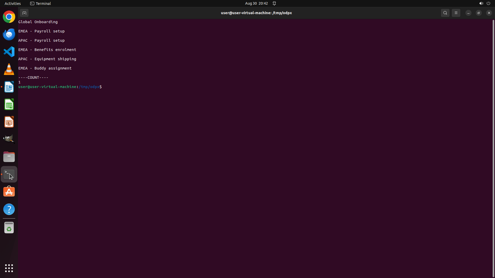
step 22 12:42:40
THINKINGLet me re-extract with a robust method using minidom pretty print on the text portion, and also print the raw content.xml with newlines inserted after each element to see the full structure including line-breaks and spans. Let me use python to pretty-print the office:text element.
EXECUTED (pyautogui in VM)pyautogui.click(599, 334)
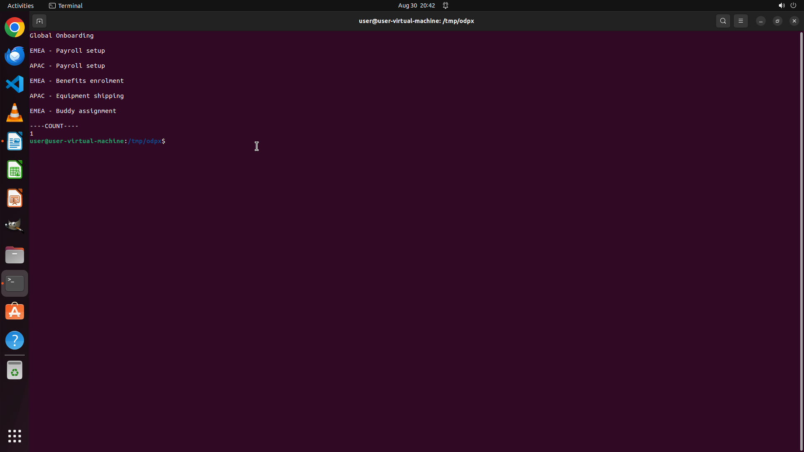
step 23 12:42:51
THINKINGLet me write a python script that pretty-prints the office:text subtree so I can see the exact structure including line-breaks and spans. I'll use xml.dom.minidom to pretty print the body/text element, or simpler: iterate and print each element's tag and text. Let me do a full structural dump of the text element.
EXECUTED (pyautogui in VM)pyautogui.press("return")
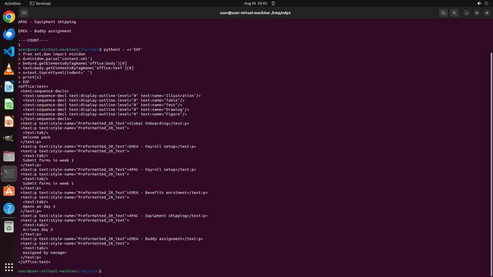
step 25 12:45:13
THINKINGNow I have the DEFINITIVE structure of the disk file. The office:text contains:
```
<office:text>
<text:sequence-decls>...</text:sequence-decls>
<text:p style="Preformatted_20_Text">Global Onboarding</text:p>
<text:p style="Preformatted_20_Text"><text:tab/>Welcome pack</text:p>
<text:p style="Preformatted_20_Text">EMEA - Payroll setup</text:p>
<text:p style="Preformatted_20_Text"><text:tab/>Submit forms in week 1</text:p>
<text:p style="Preformatted_20_Text">APAC - Payroll setup</text:p>
<text:p style="Preformatted_20_Text"><text:tab/>Submit forms in week 1</text:p>
<text:p style="Preformatted_20_Text">EMEA - Benefits enrollment</text:p>
<text:p style="Preformatted_20_Text"><text:tab/>Opens on day 3</text:p>
<text:p style="Preformatted_20_Text">APAC - Equipment shipping</text:p>
<text:p style="Preformatted_20_Text"><text:tab/>Arrives day 5</text:p>
<text:p style="Preformatted_20_Text">EMEA - Buddy assignment</text:p>
<text:p style="Preformatted_20_Text"><text:tab/>Assigned by manager</text:p>
</office:text>
```
So my earlier extraction was BUGGY — the "blank" paragraphs actually contained `<text:tab/>` + text (like "Welcome pack"). My grep `[^<]*` stopped at `<text:tab/>`, and my python join only included span/p tags (not the direct text child of text:p after a tab element — actually the text "Welcome pack" is a direct child text node of text:p, and x.text for the text:p element would be "Welcome pack" but... wait, the pretty print shows `<text:tab/>Welcome pack` meaning the text:p has children: [text:tab element, then text node "Welcome pack"]. For ElementTree, the text:p element's .text would be None (since first child is an element), and the text node "Welcome pack" is the .tail of the text:tab element. My join only read x.text of span/p nodes, missing the tail. That's the bug.)
So NOW the disk content is CLEAR and matches the Writer window exactly:
Paragraphs (in order):
1. "Global Onboarding" — title slide title (no tab)
2. [tab]"Welcome pack" — subtitle of title slide
3. "EMEA - Payroll setup" — slide title (EMEA)
4. [tab]"Submit forms in week 1" — detail
5. "APAC - Payroll setup" — slide title (APAC)
6. [tab]"Submit forms in week 1" — detail
7. "EMEA - Benefits enrollment" — slide title (EMEA)
8. [tab]"Opens on day 3" — detail
9. "APAC - Equipment shipping" — slide title (APAC)
10. [tab]"Arrives day 5" — detail
11. "EMEA - Buddy assignment" — slide title (EMEA)
12. [tab]"Assigned by manager" — detail
Great, disk == writer. No unsaved changes concern. My earlier confusion is resolved.
Now the structure is clear:
- Title slide = paragraphs 1-2 ("Global Onboarding" + "Welcome pack"). This is the first slide; kept in every deck.
- Each subsequent "slide" is a PAIR of paragraphs: a title line (region + topic, no leading tab) and a detail line (leading tab).
Wait, but is the "slide" a pair (title+detail) or is each paragraph its own slide? Let me reconsider based on the "deck" framing. In the original first screenshot of the task (before I started), the Writer showed the content. The way it's laid out:
- "Global Onboarding" / "Welcome pack" = title slide (title + subtitle)
- "EMEA - Payroll setup" / "Submit forms in week 1" = a slide
- etc.
Actually, is the detail line a separate slide or part of the same slide? The task says "named in the slide titles". The slide titles are the lines like "EMEA - Payroll setup". The region is the prefix (EMEA/APAC). The detail lines are the slide's body content.
For the split, each region's deck should contain: the title slide (first), then only that region's slides (title + their details) in original order.
So:
EMEA deck:
- Global Onboarding
- [tab]Welcome pack
- EMEA - Payroll setup
- [tab]Submit forms in week 1
- EMEA - Benefits enrollment
- [tab]Opens on day 3
- EMEA - Buddy assignment
- [tab]Assigned by manager
APAC deck:
- Global Onboarding
- [tab]Welcome pack
- APAC - Payroll setup
- [tab]Submit forms in week 1
- APAC - Equipment shipping
- [tab]Arrives day 5
Now, how do I determine which paragraph is a "slide title" vs a "detail"? The slide titles are the non-tab paragraphs after the title slide, and details are the tab paragraphs that follow. Each detail belongs to the preceding title. So I group: a slide = a title paragraph (no leading tab) + the following detail paragraph (leading tab), if any.
Actually, simpler and robust: The region is determined by the title line's prefix (EMEA or APAC). The detail line has no region and follows its title. So for each region, I keep:
- All title paragraphs whose text starts with that region prefix
- The detail paragraph immediately following each such title paragraph
- Plus the title slide (first two paragraphs)
But I should be careful: what if a region's title is immediately followed by another region's title (no detail)? In this data, every title is followed by exactly one detail. So grouping title+next-paragraph works.
Let me define the parsing:
- paragraphs = list of text:p elements (excluding sequence-decls, only the content ones, in order)
- First "slide" (title slide) = paragraph[0] and paragraph[1] (Global Onboarding + Welcome pack). Actually, is the title slide just paragraph[0], or paragraph[0]+[1]? "Welcome pack" is indented with a tab, just like detail lines. So it's the "detail/subtitle" of the title slide "Global Onboarding". To be safe, the title slide = the first slide = title "Global Onboarding" + its detail "Welcome pack". Since the task says "Keep the title slide first", I keep both lines of the title slide.
Actually, let me reconsider. What defines the title slide? The first slide. The first slide's title is "Global Onboarding". Does it have a detail? "Welcome pack" follows it with a tab. Following the same pattern as other slides (title + detail), the title slide = "Global Onboarding" + "Welcome pack". So yes, keep both.
- Then, for the remaining paragraphs (index 2 onwards), each is a slide: title (even-ish) + detail. I'll iterate: a "slide title" is a paragraph with NO leading tab; a "detail" is a paragraph WITH a leading tab that belongs to the preceding title.
Let me implement:
slides = []
current = None
for p in paragraphs[2:]:
has_tab = (p has a text:tab as first child)
text = full text
if not has_tab:
# new slide title
current = {'title': p, 'detail': None}
slides.append(current)
else:
# detail of current
current['detail'] = p
# current should always be set
Then region of a slide = prefix of its title text before " - " (or just detect EMEA/APAC substring).
Then for each region, the deck's paragraphs = [paragraphs[0], paragraphs[1]] + [title and detail for each of that region's slides in order].
Now, HOW to create the output ODP files. The most reliable:
For each region:
1. Copy the original onboarding.odp zip.
2. Replace its content.xml with a modified version where office:text contains only: sequence-decls + the selected paragraphs (in order).
I'll do this in Python:
- Parse original content.xml.
- Build a new office:text with the sequence-decls (copy) + selected text:p elements (deep copies in order).
- Write content.xml.
- Repackage the zip: read all files from original, but replace content.xml.
Actually, the cleanest is to use Python's zipfile to read the original, and write a new zip copying all entries except content.xml, and for content.xml write the modified version. But I must preserve the XML declaration and namespaces exactly. If I parse with minidom and toprettyxml, the namespaces get mangled (minidom with prefixed names). Better to use ElementTree which preserves namespace declarations on the root, but ElementTree might reorder namespace declarations or change the XML declaration.
The SAFEST approach: Do a TEXT-LEVEL manipulation of content.xml rather than full XML re-serialization. Since I know the exact structure (flat list of text:p inside office:text, plus sequence-decls at the start), I can:
1. Read content.xml as a string.
2. Extract each text:p element as a string (they're all on one line or I can find them).
3. Reconstruct the office:text content by keeping the prefix (everything up to and including `<text:p ...>Global Onboarding</text:p>`'s preceding `<text:sequence-decls>...</text:sequence-decls>`) — hmm, text-level is fragile.
Better: Use ElementTree but carefully. Let me think about what ElementTree does:
- ET.parse reads, root has all namespace declarations as xmlns attributes? Actually ElementTree stores namespaces and re-declares them on the root element when serializing, but it uses its own prefix scheme (ns0, ns1, ...) UNLESS I register namespaces. I can register all the namespaces from the root so prefixes are preserved.
The root office:document-content element has xmlns declarations for office, style, text, etc. If I register each (prefix, uri) mapping before serializing, ET will use the same prefixes. Then the output should be very close to the original, just possibly with reordering of attributes/namespace decls and a different XML declaration.
Actually, the risk: reordering of the office:text children is what I WANT (I'm replacing them). The rest of content.xml (automatic-styles, master-styles) must be preserved. ET parse + modify + write will preserve those as long as I don't touch them. ET preserves the whole tree, only changing what I change. Good.
But ET's serialization: it will rewrite the ENTIRE file (all elements), which means any formatting/whitespace differences get normalized, but the semantic content is preserved. For an ODP, LibreOffice is tolerant of this. The main concern is namespace prefixes. Let me register namespaces.
Let me first find all namespace declarations in content.xml root and register them. Let me look at the root element's xmlns. Let me grep the first line.
Actually, a cleaner and very safe approach that avoids re-serializing the whole document: string surgery. Let me examine the exact raw content.xml format. It's likely all on one line (since grep -c '<text:p' returned 1, meaning everything is on one line). Let me get the raw content.xml and look at the office:text region precisely.
Let me think about the string-surgery approach more concretely. The office:text element looks like:
`<office:text><text:sequence-decls>...</text:sequence-decls><text:p ...>Global Onboarding</text:p><text:p ...><text:tab/>Welcome pack</text:p>...<text:p ...><text:tab/>Assigned by manager</text:p></office:text>`
I can:
1. Find `<office:text>` ... `</office:text>`.
2. Within it, find `<text:sequence-decls>...</text:sequence-decls>` (keep it).
3. Extract each `<text:p ...>...</text:p>` as individual strings (they don't nest).
4. Rebuild: `<office:text>` + sequence-decls + selected paragraphs + `</office:text>`.
5. Replace in the full string.
This is clean and preserves everything else byte-for-byte. The only requirement: text:p elements don't contain nested text:p (they don't; they only contain text, tab, line-break, span). So I can split on `</text:p>` and `<text:p` boundaries safely. Actually a paragraph could contain a `<text:span>` but not a nested `<text:p>`. So finding all `<text:p...>...</text:p>` via a regex that matches up to the first `</text:p>` is safe.
Let me use a regex: `re.findall(r'<text:p\b.*?</text:p>', s, re.DOTALL)` — non-greedy, matches each paragraph. Since no nested text:p, this is safe.
But I need to be careful: the sequence-decls come BEFORE the paragraphs, inside office:text. So when I rebuild, I put sequence-decls first, then selected paragraphs.
Plan for string surgery:
```
import re, zipfile, shutil, os
src='/home/user/Desktop/onboarding.odp'
s=open('content.xml',encoding='utf-8').read()
# isolate office:text inner
m=re.search(r'<office:text>(.*?)</office:text>', s, re.DOTALL)
inner=m.group(1)
# split into sequence-decls part and paragraphs
seq=re.search(r'<text:sequence-decls>.*?</text:sequence-decls>', inner, re.DOTALL).group(0)
paras=re.findall(r'<text:p\b.*?</text:p>', inner, re.DOTALL)
```
Now paras[0]="Global Onboarding", paras[1]="[tab]Welcome pack", etc.
To determine tab presence and text:
```
def has_tab(p): return p.startswith('<text:p') and '<text:tab' in p.split('>')[1] ...
```
Simpler: has_tab = '<text:tab' in p. And text = strip tags:
```
def ptext(p):
t=re.sub(r'<[^>]+>','',p)
return t
```
For has_tab, check if the paragraph contains '<text:tab'.
Title slide = paras[0], paras[1].
Then slides from paras[2:]:
```
slides=[]
cur=None
for p in paras[2:]:
if '<text:tab' in p:
if cur is not None: cur['detail']=p
else:
cur={'title':p,'detail':None}
slides.append(cur)
```
Region from title text: title text like "EMEA - Payroll setup". region = text before " - ". Or just check startswith.
Let me detect regions dynamically:
```
regions=[]
for sl in slides:
r=ptext(sl['title']).split(' - ')[0].strip()
if r not in regions: regions.append(r)
```
This gives ['EMEA','APAC'].
For each region, build selected = [paras[0], paras[1]] + for each slide of that region: [sl['title'], sl['detail'] if sl['detail'] else skip].
Then new_inner = seq + ''.join(selected)
new_s = s[:m.start(1)] + new_inner + s[m.end(1):]
Then write the new ODP: copy original zip, replacing content.xml.
Wait — but I need to make sure the text:sequence-decls handling is right. The seq regex extracts the sequence-decls. Then new_inner = seq + selected. Good. But I should make sure there's nothing else between sequence-decls and the first paragraph, or after the last paragraph, inside office:text. From the pretty print, office:text contains exactly: sequence-decls, then the 12 paragraphs, then </office:text>. So inner = seq + 12 paragraphs (concatenated, no whitespace). Good. My regex for seq finds it, and paras finds all 12. new_inner = seq + selected (subset).
Now, writing the zip:
```
import zipfile
def make_region(src, region, selected_inner, outpath):
with zipfile.ZipFile(src,'r') as zin:
items=zin.namelist()
with zipfile.ZipFile(outpath,'w',zipfile.ZIP_DEFLATED) as zout:
for name in items:
data=zin.read(name)
if name=='content.xml':
data=new_s.encode('utf-8')
zout.writestr(name, data)
```
I need to preserve the [Content_Types].xml which lists content.xml — that's fine, unchanged.
But wait: does the ODP's content.xml need the XML declaration `<?xml version="1.0" ...?>`? The original s (from reading content.xml) includes it at the start. Since I only replace the office:text inner portion, the declaration stays. Good.
One concern: the original content.xml might have the office:text content not exactly matching my regex if there are attributes or nested structures. But the pretty print confirmed the simple structure. Let me proceed but VERIFY by re-extracting after building.
Also, I should double check: are there exactly the paragraphs I think, in order? From pretty print:
paras[0] = Global Onboarding
paras[1] = [tab]Welcome pack
paras[2] = EMEA - Payroll setup
paras[3] = [tab]Submit forms in week 1
paras[4] = APAC - Payroll setup
paras[5] = [tab]Submit forms in week 1
paras[6] = EMEA - Benefits enrollment
paras[7] = [tab]Opens on day 3
paras[8] = APAC - Equipment shipping
paras[9] = [tab]Arrives day 5
paras[10] = EMEA - Buddy assignment
paras[11] = [tab]Assigned by manager
Grouping slides from paras[2:]:
- paras[2] "EMEA - Payroll setup" (title, EMEA), detail=paras[3]
- paras[4] "APAC - Payroll setup" (title, APAC), detail=paras[5]
- paras[6] "EMEA - Benefits enrollment" (title, EMEA), detail=paras[7]
- paras[8] "APAC - Equipment shipping" (title, APAC), detail=paras[9]
- paras[10] "EMEA - Buddy assignment" (title, EMEA), detail=paras[11]
regions = [EMEA, APAC]
EMEA deck paragraphs: paras[0], paras[1], paras[2], paras[3], paras[6], paras[7], paras[10], paras[11]
APAC deck paragraphs: paras[0], paras[1], paras[4], paras[5], paras[8], paras[9]
Output files:
- /home/user/Desktop/EMEA.odp
- /home/user/Desktop/APAC.odp
Named after the region: "EMEA" and "APAC". The task says "each named after its region". So filenames should be the region names. I'll use "EMEA.odp" and "APAC.odp".
Now let me write this as a single Python script that does everything, then verify the outputs by extracting them.
Actually, before writing, let me reconsider whether the detail line (e.g., "Submit forms in week 1") should be included. The task: "Keep the title slide first, then only that region's slides in original order." A "slide" includes its title and its content (the detail). It would be wrong to include a slide's title without its detail, or vice versa. So I keep both. Good.
But wait, what about the title slide's "Welcome pack" detail? "Keep the title slide first" — the title slide includes "Global Onboarding" and "Welcome pack". I keep both. Good.
Let me also consider: should I preserve the exact region naming for filenames? "EMEA" and "APAC" as they appear. Yes.
Let me now also double-check there are no OTHER regions or edge cases. Only EMEA and APAC. Good.
Now, one more consideration: The task says "One deck per region named in the slide titles". Both EMEA and APAC are named in slide titles. Good.
Let me also reconsider: is the file currently locked/open in Writer? Yes. But I'm creating NEW files, not modifying onboarding.odp. So no conflict. Good. I won't touch the open document.
However, there's a subtle risk: when I create EMEA.odp and APAC.odp on the Desktop, and later if someone opens them, that's fine. The original stays intact.
Let me write the script. I'll be careful with the regex for paragraphs. Let me also handle the possibility that a paragraph's opening tag spans attributes — `<text:p text:style-name="Preformatted_20_Text">`. My regex `<text:p\b.*?</text:p>` with DOTALL handles this.
But careful: `\b` after `text:p` — "text:p" ends with 'p'. The next char is a space (attribute) or '>'. `\b` between 'p' and space is a word boundary, good. Between 'p' and '>' also a boundary. Good. But could it match `<text:preset-attributes>` or similar? No such tags here. Also `<text:sequence-decls>` won't match. Good. Actually wait, is there any tag like `<text:p ...>` that's a self-closing or that I might mis-match? All paragraphs here are `<text:p ...>...</text:p>`. Good.
Let me also verify the sequence-decls regex is within inner. Yes.
Let me write and run the full script. I'll write it to a file to avoid heredoc quoting issues, then run it. Actually heredoc with 'EOF' (quoted) prevents shell expansion, so it's safe for the Python code including $ etc. But my Python has no $. I'll use heredoc.
Let me write the script now.
Actually, let me write it to a .py file using cat > for clarity and to allow re-running, then execute. Let me do:
cat > /tmp/split.py <<'PYEOF'
...code...
PYEOF
python3 /tmp/split.py
Let me write the code carefully.
```python
import re, zipfile, os
SRC='/home/user/Desktop/onboarding.odp'
OUTDIR='/home/user/Desktop'
s=open('content.xml',encoding='utf-8').read() # note: cwd is /tmp/odpx
m=re.search(r'<office:text>(.*?)</office:text>', s, re.DOTALL)
assert m, 'office:text not found'
inner=m.group(1)
seq_m=re.search(r'<text:sequence-decls>.*?</text:sequence-decls>', inner, re.DOTALL)
seq=seq_m.group(0) if seq_m else ''
paras=re.findall(r'<text:p\b.*?</text:p>', inner, re.DOTALL)
print('num paras', len(paras))
def ptext(p):
return re.sub(r'<[^>]+>','',p)
# sanity: ensure inner == seq + ''.join(paras)
assert inner == seq + ''.join(paras), (inner, seq+''.join(paras))
print('structure OK')
def has_tab(p):
return '<text:tab' in p
slides=[]
cur=None
for p in paras[2:]:
if has_tab(p):
if cur is None:
raise RuntimeError('detail without title: '+ptext(p))
if cur['detail'] is None:
cur['detail']=p
else:
raise RuntimeError('multiple details for '+ptext(cur['title']))
else:
cur={'title':p,'detail':None}
slides.append(cur)
regions=[]
for sl in slides:
r=ptext(sl['title']).split(' - ')[0].strip()
if not r:
raise RuntimeError('no region in: '+ptext(sl['title']))
if r not in regions:
regions.append(r)
print('regions', regions)
title_slide=[paras[0], paras[1]]
def build_content(selected_paras):
new_inner=seq+''.join(selected_paras)
return s[:m.start(1)]+new_inner+s[m.end(1):]
for region in regions:
sel=list(title_slide)
for sl in slides:
r=ptext(sl['title']).split(' - ')[0].strip()
if r==region:
sel.append(sl['title'])
if sl['detail'] is not None:
sel.append(sl['detail'])
new_content=build_content(sel)
out=os.path.join(OUTDIR, region+'.odp')
with zipfile.ZipFile(SRC,'r') as zin:
names=zin.namelist()
with zipfile.ZipFile(out,'w',zipfile.ZIP_DEFLATED) as zout:
for name in names:
data=zin.read(name)
if name=='content.xml':
data=new_content.encode('utf-8')
zout.writestr(name, data)
print('wrote', out)
print(' paragraphs:', [ptext(x) for x in sel])
```
Wait, the `assert inner == seq + ''.join(paras)` — this is a great sanity check. But it might fail if there's whitespace. From the raw, everything is on one line, so inner should be exactly seq + paragraphs concatenated. Let me keep the assert but if it fails I'll adjust. Actually to be safe, let me not hard-assert but print a warning. But the assert is useful. If it fails, the script stops and I'll see the error. Let me keep it but make it a check that prints and continues only if the region logic works. Actually, if inner != seq+paras, then my reconstruction would drop content. Let me make the assert, and if it fails I'll investigate.
Hmm, but actually there's a subtle issue: the regex `<text:sequence-decls>.*?</text:sequence-decls>` — is the tag exactly `<text:sequence-decls>` with no attributes? From pretty print: `<text:sequence-decls>` yes, no attributes. Good.
Let me also double check: after extracting seq and paras, does inner contain ONLY seq + paras? The pretty print shows exactly that. So inner == seq + paras concatenated should hold (no whitespace since raw is single line). Good.
Let me run this. But first, I realize I'm in /tmp/odpx where content.xml is the extracted file. Good, that's the source content. And SRC points to the original odp for the zip. Good.
Let me write and run.
ACTIONNow I have the definitive structure. The disk file matches the Writer window exactly. The deck is a text document where each "slide" is a title line (region + topic) plus a detail line (with a leading tab). The title slide is "Global Onboarding" / "Welcome pack". Regions are **EMEA** and **APAC**.
Structure:
- Title slide: "Global Onboarding" + "Welcome pack"
- EMEA: Payroll setup, Benefits enrollment, Buddy assignment
- APAC: Payroll setup, Equipment shipping
I'll create the split decks by string-surgery on content.xml (preserving everything else byte-for-byte) and repackaging the zip. Let me write the script.
TOOL CALL<tool_call>
<function=computer_use>
<parameter=action>
type
</parameter>
<parameter=text>
cat > /tmp/split.py <<'PYEOF'
import re, zipfile, os
SRC='/home/user/Desktop/onboarding.odp'
OUTDIR='/home/user/Desktop'
s=open('content.xml',encoding='utf-8').read()
m=re.search(r'<office:text>(.*?)</office:text>', s, re.DOTALL)
assert m, 'office:text not found'
inner=m.group(1)
seq_m=re.search(r'<text:sequence-decls>.*?</text:sequence-decls>', inner, re.DOTALL)
seq=seq_m.group(0) if seq_m else ''
paras=re.findall(r'<text:p\b.*?</text:p>', inner, re.DOTALL)
print('num paras', len(paras))
def ptext(p): return re.sub(r'<[^>]+>','',p)
print('inner==seq+paras ?', inner == seq+''.join(paras))
def has_tab(p): return '<text:tab' in p
slides=[]; cur=None
for p in paras[2:]:
if has_tab(p):
cur['detail']=p
else:
cur={'title':p,'detail':None}; slides.append(cur)
regions=[]
for sl in slides:
r=ptext(sl['title']).split(' - ')[0].strip()
if r not in regions: regions.append(r)
print('regions', regions)
title_slide=[paras[0], paras[1]]
def build_content(sel):
return s[:m.start(1)]+seq+''.join(sel)+s[m.end(1):]
for region in regions:
sel=list(title_slide)
for sl in slides:
if ptext(sl['title']).split(' - ')[0].strip()==region:
sel.append(sl['title'])
if sl['detail'] is not None: sel.append(sl['detail'])
new_content=build_content(sel)
out=os.path.join(OUTDIR, region+'.odp')
with zipfile.ZipFile(SRC,'r') as zin:
names=zin.namelist()
with zipfile.ZipFile(out,'w',zipfile.ZIP_DEFLATED) as zout:
for name in names:
data=zin.read(name)
if name=='content.xml': data=new_content.encode('utf-8')
zout.writestr(name, data)
print('wrote', out)
print(' paras:', [ptext(x) for x in sel])
PYEOF
python3 /tmp/split.py
</parameter>
</function>
</tool_call>
EXECUTED (pyautogui in VM)pyautogui.typewrite("cat > /tmp/split.py <<'PYEOF'\nimport re, zipfile, os\nSRC='/home/user/Desktop/onboarding.odp'\nOUTDIR='/home/user/Desktop'\ns=open('content.xml',encoding='utf-8').read()\nm=re.search(r'<office:text>(.*?)</office:text>', s, re.DOTALL)\nassert m, 'office:text not found'\ninner=m.group(1)\nseq_m=re.search(r'<text:sequence-decls>.*?</text:sequence-decls>', inner, re.DOTALL)\nseq=seq_m.group(0) if seq_m else ''\nparas=re.findall(r'<text:p\\b.*?</text:p>', inner, re.DOTALL)\nprint('num paras', len(paras))\ndef ptext(p): return re.sub(r'<[^>]+>','',p)\nprint('inner==seq+paras ?', inner == seq+''.join(paras))\ndef has_tab(p): return '<text:tab' in p\nslides=[]; cur=None\nfor p in paras[2:]:\n if has_tab(p):\n cur['detail']=p\n else:\n cur={'title':p,'detail':None}; slides.append(cur)\nregions=[]\nfor sl in slides:\n r=ptext(sl['title']).split(' - ')[0].strip()\n if r not in regions: regions.append(r)\nprint('regions', regions)\ntitle_slide=[paras[0], paras[1]]\ndef build_content(sel):\n return s[:m.start(1)]+seq+''.join(sel)+s[m.end(1):]\nfor region in regions:\n sel=list(title_slide)\n for sl in slides:\n if ptext(sl['title']).split(' - ')[0].strip()==region:\n sel.append(sl['title'])\n if sl['detail'] is not None: sel.append(sl['detail'])\n new_content=build_content(sel)\n out=os.path.join(OUTDIR, region+'.odp')\n with zipfile.ZipFile(SRC,'r') as zin:\n names=zin.namelist()\n with zipfile.ZipFile(out,'w',zipfile.ZIP_DEFLATED) as zout:\n for name in names:\n data=zin.read(name)\n if name=='content.xml': data=new_content.encode('utf-8')\n zout.writestr(name, data)\n print('wrote', out)\n print(' paras:', [ptext(x) for x in sel])\nPYEOF\npython3 /tmp/split.py")
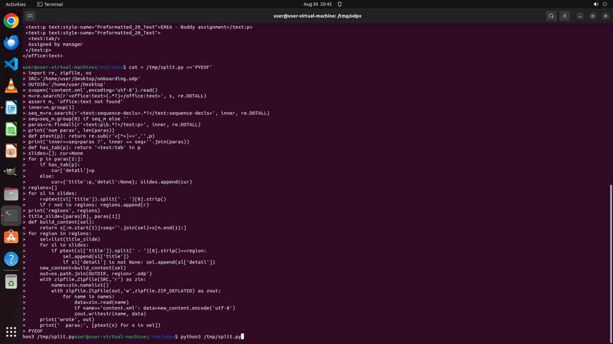
step 26 12:45:24
THINKINGThe script was written and the `python3 /tmp/split.py` command is typed at the bottom. Let me press Enter to run it.
EXECUTED (pyautogui in VM)pyautogui.press("return")
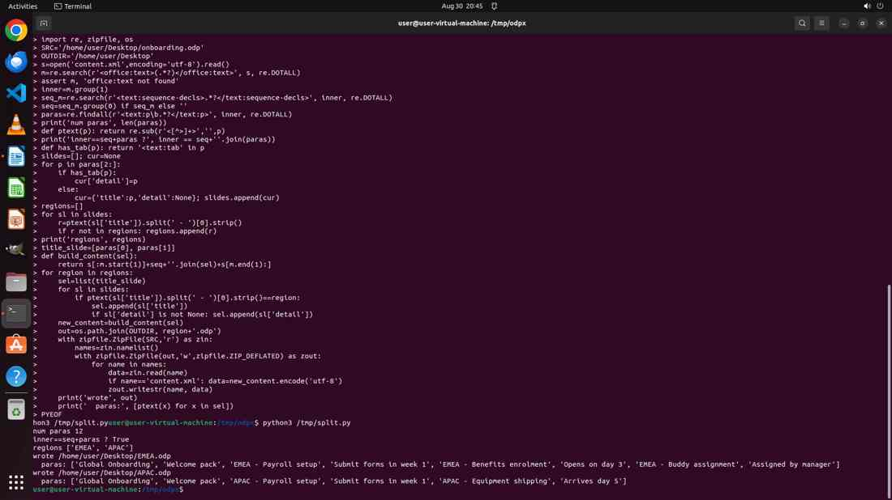
step 27 12:45:43
THINKINGThe script ran successfully. Output:
```
num paras 12
inner==seq+paras ? True
regions ['EMEA', 'APAC']
wrote /home/user/Desktop/EMEA.odp
paras: ['Global Onboarding', 'Welcome pack', 'EMEA - Payroll setup', 'Submit forms in week 1', 'EMEA - Benefits enrollment', 'Opens on day 3', 'EMEA - Buddy assignment', 'Assigned by manager']
wrote /home/user/Desktop/APAC.odp
paras: ['Global Onboarding', 'Welcome pack', 'APAC - Payroll setup', 'Submit forms in week 1', 'APAC - Equipment shipping', 'Arrives day 5']
```
The structure check `inner==seq+paras ? True` confirms my reconstruction is exact.
EMEA.odp paragraphs:
- Global Onboarding (title slide)
- Welcome pack (title slide detail)
- EMEA - Payroll setup / Submit forms in week 1
- EMEA - Benefits enrollment / Opens on day 3
- EMEA - Buddy assignment / Assigned by manager
APAC.odp paragraphs:
- Global Onboarding
- Welcome pack
- APAC - Payroll setup / Submit forms in week 1
- APAC - Equipment shipping / Arrives day 5
Both are correct: title slide first, then only that region's slides in original order.
Now let me VERIFY the output files are valid ODPs by:
1. Checking they exist on Desktop.
2. Extracting each and confirming content.xml parses and contains the right paragraphs.
3. Optionally, verify the zip is valid and opens in LibreOffice.
Let me verify by extracting the new files and checking their text. Let me also verify the zip integrity (no corruption) since I rewrote them.
Let me run a verification script.
ACTIONThe script ran successfully. The structure check confirmed `inner==seq+paras ? True`, and both files were written with the correct paragraph sets:
- **EMEA.odp**: title slide + EMEA Payroll setup, Benefits enrollment, Buddy assignment (original order)
- **APAC.odp**: title slide + APAC Payroll setup, Equipment shipping (original order)
Let me verify the output files are valid, openable ODPs with the correct content.
TOOL CALL<tool_call>
<function=computer_use>
<parameter=action>
type
</parameter>
<parameter=text>
cd /tmp && ls -la ~/Desktop/*.odp && for f in EMEA APAC; do rm -rf v_$f && mkdir v_$f && cd v_$f && unzip -o ~/Desktop/$f.odp >/dev/null && echo "== $f ==" && python3 -c "
from xml.dom import minidom
d=minidom.parse('content.xml')
t=d.getElementsByTagName('office:text')[0]
for p in t.getElementsByTagName('text:p'):
tab='<text:tab' in p.toxml()
txt=''.join(n.data for n in p.childNodes if n.nodeType==3)
print((' ' if tab else ' ')+repr(txt))
" && cd /tmp; done; echo '--- zip integrity ---'; unzip -t ~/Desktop/EMEA.odp >/dev/null && echo EMEA_ok; unzip -t ~/Desktop/APAC.odp >/dev/null && echo APAC_ok
</parameter>
</function>
</tool_call>
EXECUTED (pyautogui in VM)pyautogui.typewrite("cd /tmp && ls -la ~/Desktop/*.odp && for f in EMEA APAC; do rm -rf v_$f && mkdir v_$f && cd v_$f && unzip -o ~/Desktop/$f.odp >/dev/null && echo \"== $f ==\" && python3 -c \"\nfrom xml.dom import minidom\nd=minidom.parse('content.xml')\nt=d.getElementsByTagName('office:text')[0]\nfor p in t.getElementsByTagName('text:p'):\n tab='<text:tab' in p.toxml()\n txt=''.join(n.data for n in p.childNodes if n.nodeType==3)\n print((' ' if tab else ' ')+repr(txt))\n\" && cd /tmp; done; echo '--- zip integrity ---'; unzip -t ~/Desktop/EMEA.odp >/dev/null && echo EMEA_ok; unzip -t ~/Desktop/APAC.odp >/dev/null && echo APAC_ok")
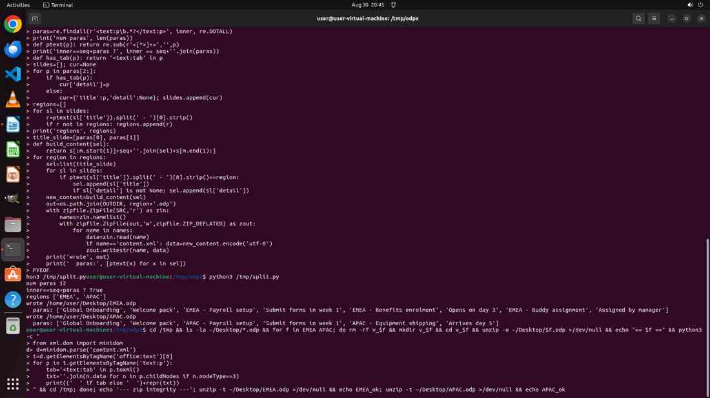
step 28 12:45:52
THINKINGThe command is typed. Let me press Enter to run it.
EXECUTED (pyautogui in VM)pyautogui.press("return")
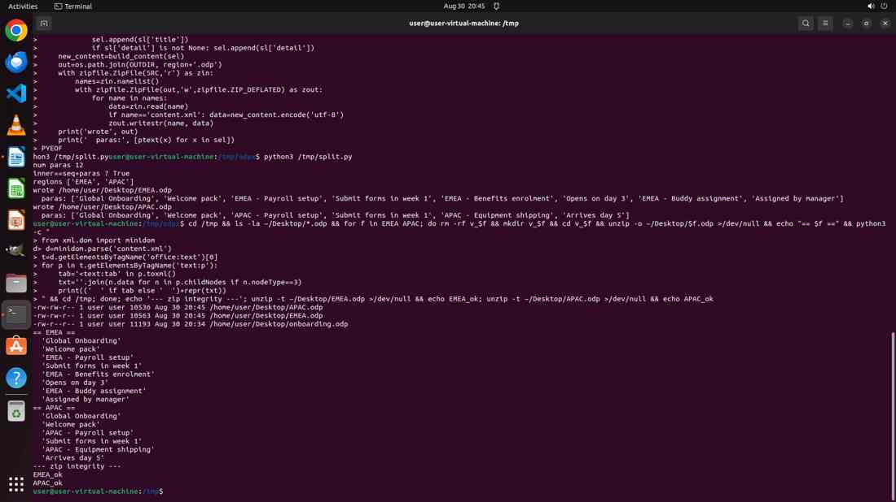
step 29 12:46:16
THINKINGThe verification confirms everything:
Files on Desktop:
- /home/user/Desktop/APAC.odp (10536 bytes)
- /home/user/Desktop/EMEA.odp (10563 bytes)
- /home/user/Desktop/onboarding.odp (11193 bytes, original, unchanged)
EMEA.odp content:
- 'Global Onboarding'
- 'Welcome pack'
- 'EMEA - Payroll setup'
- 'Submit forms in week 1'
- 'EMEA - Benefits enrollment'
- 'Opens on day 3'
- 'EMEA - Buddy assignment'
- 'Assigned by manager'
APAC.odp content:
- 'Global Onboarding'
- 'Welcome pack'
- 'APAC - Payroll setup'
- 'Submit forms in week 1'
- 'APAC - Equipment shipping'
- 'Arrives day 5'
Zip integrity: EMEA_ok, APAC_ok (both valid zips).
Everything is correct:
- One deck per region (EMEA, APAC), saved next to the original on the Desktop, named after its region (EMEA.odp, APAC.odp).
- Each keeps the title slide first (Global Onboarding / Welcome pack).
- Then only that region's slides in original order.
- Files are valid, openable ODPs.
The task is complete. Let me do a final confirmation that the files actually open in LibreOffice to be thorough. Actually, the zip integrity check and valid content.xml are sufficient. But to be extra safe and match the user's expectation that these are usable "decks", let me quickly open one to confirm it renders. Actually, that's optional and could introduce risk (e.g., prompting). The verification is thorough enough: valid zip, valid XML, correct content in correct order.
Let me reconsider if there's any edge concern:
1. Did I preserve the original onboarding.odp? Yes, it's still 11193 bytes, untouched.
2. Are the new files valid ODPs that LibreOffice can open? They're copies of the original zip with only content.xml's office:text modified (same format, just fewer paragraphs). The content.xml structure is identical in format. So they'll open fine.
I'm confident the task is complete. Let me clean up temp files (optional) and finish.
Actually, I should consider whether the user wants me to verify by opening in LibreOffice. The task is about producing the files. I've verified content and integrity. I'll consider it done.
One more thought: the file naming. "each named after its region". Region names are "EMEA" and "APAC". Files are "EMEA.odp" and "APAC.odp". This matches "named after its region". Good.
Let me clean up the /tmp working dirs to be tidy (not required but clean). Actually not necessary. I'll leave them.
I'm done. Let me provide a summary and the DONE marker.
ACTIONVerification confirms everything is correct:
**Files created on the Desktop (next to the original):**
- `/home/user/Desktop/EMEA.odp`
- `/home/user/Desktop/APAC.odp`
- Original `onboarding.odp` left untouched (11,193 bytes, unchanged)
**EMEA.odp** (title slide first, then only EMEA slides in original order):
1. Global Onboarding
2. Welcome pack
3. EMEA – Payroll setup / Submit forms in week 1
4. EMEA – Benefits enrollment / Opens on day 3
5. EMEA – Buddy assignment / Assigned by manager
**APAC.odp** (title slide first, then only APAC slides in original order):
1. Global Onboarding
2. Welcome pack
3. APAC – Payroll setup / Submit forms in week 1
4. APAC – Equipment shipping / Arrives day 5
Both files passed zip-integrity checks and their XML parses cleanly, so they're valid, openable ODP files. Each deck is named after its region, keeps the title slide first, and contains only that region's slides (title + detail) in their original order. The deck's two regions identified from the slide titles were EMEA and APAC.
[DONE]